Influint · Channel Intelligence
Influint · Channel Intelligence
Nizarisaqt › MoreNizarisaqt › Study
Study · public data only · outside the creative engine
Nizarisaqt IRL: 150 ideas in 20 formats
Ideas for a real-life channel that has 78.3K subscribers and no uploads yet. The first hundred follow what Cash and Nico did when they opened their real-life channels. The fifty added on 2026-09-24 are ten formats Nizar can film alone. Every idea carries the real uploads it was built from and a projection computed from them.
Browse the 100 thumbnails and download the set · Added 2026-09-11 · Browse the 50 solo thumbnails · Added 2026-09-24
The formats
Twenty formats at a glance
Each row is a format; open it for its ideas. Lift is an upload's views against its own channel's typical upload, and the projection is the main channel's 265K median times the format's median lift. Confidence is graded for the solo formats only, by how many channels have made the real-life version: high is three or more, the knowledge base's convergence bar, medium is two, low is one.
| # | Format | Ideas | Evidence: uploads · channels | Median lift | Projected per idea | Confidence |
|---|---|---|---|---|---|---|
| The first hundred, ten families | ||||||
| 1 | Launch week and the cast | 10 | 26 · 7 ch | 2.46x | ~650K | not graded |
| 2 | Roblox, but in real life | 10 | 32 · 9 ch | 2.15x | ~567K | not graded |
| 3 | Food penalties and eating constraints | 10 | 21 · 4 ch | 2.33x | ~616K | not graded |
| 4 | 24 hours and overnight | 10 | 25 · 5 ch | 2.32x | ~613K | not graded |
| 5 | Brother and family | 10 | 28 · 5 ch | 1.65x | ~436K | not graded |
| 6 | Fans and the audience | 10 | 28 · 5 ch | 1.01x | ~268K | not graded |
| 7 | Money, buying and products | 10 | 19 · 6 ch | 1.77x | ~469K | not graded |
| 8 | Party games and the crew | 10 | 26 · 4 ch | 1.39x | ~367K | not graded |
| 9 | Horror, 3AM and stunts | 10 | 26 · 5 ch | 2.52x | ~666K | not graded |
| 10 | Morocco, identity and travel | 10 | 21 · 5 ch | 1.78x | ~472K | not graded |
| Ten solo formats, added 2026-09-24 | ||||||
| 11 | Reacting to videos about me Solo | 5 | 19 · 5 ch | 2.27x | ~600K | High |
| 12 | Roblox food, made real Solo | 5 | 8 · 3 ch | 1.76x | ~466K | High |
| 13 | Opening 100, in real life Solo | 5 | 5 · 3 ch | 1.64x | ~434K | High |
| 14 | Roblox vs real life Solo | 5 | 11 · 3 ch | 1.27x | ~335K | High |
| 15 | Fill it, then escape it Solo | 5 | 11 · 2 ch | 1.60x | ~423K | Medium |
| 16 | One Roblox game, played for real Solo | 5 | 17 · 2 ch | 1.12x | ~296K | Medium |
| 17 | Me vs the Akinator Solo | 5 | 14 · 2 ch | 1.09x | ~289K | Medium |
| 18 | Secret rooms, built alone Solo | 5 | 14 · 2 ch | 1.05x | ~278K | Medium |
| 19 | The truth about ___ Solo | 5 | 5 · 2 ch | 1.71x | ~453K | Low |
| 20 | Everything I draw becomes real Solo | 5 | 17 · 9 ch | 1.18x | ~313K | Low |
Start here
The first ten uploads, in order
The order both reference channels used, corrected by what their own catalogues later said: the face, the partner and the room first, one cast video a week after that. The solo formats below fill the weeks the cast isn't available.
- #1 A Day in the Life of Nizar (15 Videos a Week)Mirrors upload 1 on both reference channels. Eight to ten minutes.
- #2 I Met Rex in Real LifeMirrors upload 2 on both: the duo partner walks in. The tentpole shape, spent on the person the audience already knows.
- #3 House Tour: Where 15 Videos a Week Get MadeMirrors Cash's upload 3. The IRL channel already features the Dream House video, so the tour is the follow-up it promised.
- #21 Eating Only SOUR Candy for 24 HoursThe main channel's biggest outlier of the year, taken out of the game. The face on the thumbnail is the one that already works.
- #4 My Little Brother Reads My Hate CommentsCash's upload 4, with the correction his own catalogue supplies: a second person tripled it.
- #13 Roblox Mukbang vs Real-Life MukbangThe bridge video: the one hybrid shape measured on the Roblox channels themselves (1.84x on Kat). Also a candidate for the main channel that week.
- #8 Who Knows Nizar Better? Brother vs RexCheap, two contestants, one evening. The first cast video.
- #31 Living in My Car for 24 HoursThe first constraint video: three readings on two channels, all above median.
- #51 Reacting to Your TikToks About Me (With My Brother)His own 2.27x, run once on the new channel where it is new again; the repeat measured 0.62x.
- #5 I Met Cash & Nico in Real LifeThe month-one tentpole. The guest's size is the variable, and the audience has already voted on YouTuber crossovers at 2.67x.
Formats 1 to 10
The first hundred, in ten families
100 thumbnail concepts
Click any thumbnail to enlarge it, or download the full set as 1280 × 720 JPEGs.
About these concepts
Created using 10 Rules of Thumbnails, 16 Engaging Thumbnail Frameworks, and this site’s intelligence system: a clear subject, readable contrast, a meaningful unanswered question, and text that complements the title. These are creative concepts for proposed videos. Unreferenced supporting people are illustrative stand-ins; scenes and screen content are generated. They have not been tested with viewers.
Generated with the built-in image generator, which did not expose its model name. GPT Image 2.5 Flare could not be verified. The ZIP includes the selected prompts; thumbnail metadata records the chosen frameworks.
Every view count is a projection: the main channel's median times the median lift of the real uploads under the card's Why this idea, which also lists the channels and the rules applied.
1Launch week and the cast
What both IRL channels opened with, and the cast-introduction shape that carries them. The tentpole of an IRL channel built off a Roblox channel is meeting the people the audience already knows.
10 ideas · 26 uploads from 7 channels · evidence median 2.46x · ideas #1 to #10

Why this idea
Both reference channels opened with exactly this video, at 8:12 and 8:49. Neither was a peak (1.36x and 0.52x of their eventual medians): it is the opener, not the hit, and its job is to make the face and the room familiar before the tentpoles land.
The main channel's median upload does 265K views. The uploads below run a median 0.87x their own channels' typical upload across 3 scored videos, so the midpoint is 265K × 0.87; the range is the main channel's quartile spread (0.64x to 1.40x).
 1.36xA Day in the Life of Cash
1.36xA Day in the Life of Cash Cash Marco
Cash Marco 0.87xDay in the Life of Nico & Zoey
0.87xDay in the Life of Nico & Zoey Nico Polo
Nico Polo- 0.87xDay in the Life of Nico & ZoeyNico Polo
Cash Marco1.7M subscribersno uploads in the past 360 days (last upload 2025-06-14) · lifetime mean 1.9M · median 1.4M over 145 uploadsNico Polo1.37M subscribers13 uploads aged 28 to 360 days · mean 2.4M · median 2M (lifetime)
Why this idea
The strongest shape on both channels: eight instances across Cash Marco and Nico Polo, seven of them above their channel median (the exception is a fan-group meeting), and the duo-partner version was upload two on Cash Marco and upload three on Nico Polo. Rex already co-stars in the MM2 videos and runs his own 97K channel, so the audience knows who is walking in.
The main channel's median upload does 265K views. The uploads below run a median 3.00x their own channels' typical upload across 4 scored videos, so the midpoint is 265K × 3.00; the range is the main channel's quartile spread (0.64x to 1.40x).
 3.79xI Met Nico in Real LifeCash Marco
3.79xI Met Nico in Real LifeCash Marco 2.22xI Met Cash In Real LifeNico Polo
2.22xI Met Cash In Real LifeNico Polo 2.17xI Met Zoey In Real LifeNico Polo
2.17xI Met Zoey In Real LifeNico Polo 4.79xI Met Shady in Real LifeCash Marco
4.79xI Met Shady in Real LifeCash Marco new
new
Cash Marco1.7M subscribersno uploads in the past 360 days (last upload 2025-06-14) · lifetime mean 1.9M · median 1.4M over 145 uploadsNico Polo1.37M subscribers13 uploads aged 28 to 360 days · mean 2.4M · median 2M (lifetime) Rex (nizxrex)96.9K subscribers83 uploads aged 28 to 360 days · mean 141K · median 112K (lifetime)
Rex (nizxrex)96.9K subscribers83 uploads aged 28 to 360 days · mean 141K · median 112K (lifetime)
Why this idea
Cash Marco's third upload (1.86x); Nico Polo's apartment video read 0.74x, so the tour is a launch-week video, not a later one. Nizar's own Dream House video (1.30x on the main channel) is the one the IRL channel already features, which makes the tour its natural follow-up.
The main channel's median upload does 265K views. The uploads below run a median 1.30x their own channels' typical upload across 3 scored videos, so the midpoint is 265K × 1.30; the range is the main channel's quartile spread (0.64x to 1.40x).
 1.86xCash’s Apartment TourCash Marco
1.86xCash’s Apartment TourCash Marco 0.74xMoving Into My New ApartmentNico Polo
0.74xMoving Into My New ApartmentNico Polo 1.30xI Bought My DREAM HOUSE...
1.30xI Bought My DREAM HOUSE... Nizarisaqt
Nizarisaqt
Cash Marco1.7M subscribersno uploads in the past 360 days (last upload 2025-06-14) · lifetime mean 1.9M · median 1.4M over 145 uploadsNico Polo1.37M subscribers13 uploads aged 28 to 360 days · mean 2.4M · median 2M (lifetime)Nizarisaqt2.62M subscribers317 uploads aged 28 to 360 days · mean 410K · median 334K (lifetime)
Why this idea
Cash Marco's solo version was his fourth upload and read 0.79x; the version with Shady a year later read 2.43x. The lesson is the second person, not the comments. Nizar's own reacting-to-you video is a 2.27x breakout on MoreNizarisaqt.
The main channel's median upload does 265K views. The uploads below run a median 2.27x their own channels' typical upload across 3 scored videos, so the midpoint is 265K × 2.27; the range is the main channel's quartile spread (0.64x to 1.40x).
 0.79xReading Hate CommentsCash Marco
0.79xReading Hate CommentsCash Marco 2.43xCash & Shady Read Mean CommentsCash Marco
2.43xCash & Shady Read Mean CommentsCash Marco 2.27xReacting to YOUR TikToks About Me...
2.27xReacting to YOUR TikToks About Me... MoreNizarisaqt
MoreNizarisaqt
Cash Marco1.7M subscribersno uploads in the past 360 days (last upload 2025-06-14) · lifetime mean 1.9M · median 1.4M over 145 uploadsMoreNizarisaqt460K subscribers438 uploads aged 28 to 360 days · mean 150K · median 122K (first 28 days)
Why this idea
On Nico Polo the guest's size set the ceiling: Foltyn (13.3M subscribers) made the channel's second-biggest video at 7.5M, Lana's Life (10M) made 3.0M. Nizar's own YouTuber-crossover video is a 2.67x breakout on the main channel, so the appetite is already measured on his audience.
The main channel's median upload does 265K views. The uploads below run a median 2.97x their own channels' typical upload across 4 scored videos, so the midpoint is 265K × 2.97; the range is the main channel's quartile spread (0.64x to 1.40x).
 3.26xI Met Foltyn In Real LifeNico Polo
3.26xI Met Foltyn In Real LifeNico Polo 3.29xI Met Mia in Real LifeCash Marco
3.29xI Met Mia in Real LifeCash Marco 1.30xI Met Lana’s Life In Real LifeNico Polo
1.30xI Met Lana’s Life In Real LifeNico Polo 2.67xI Snuck Into YOUTUBERS VIDEOS...Nizarisaqt
2.67xI Snuck Into YOUTUBERS VIDEOS...Nizarisaqt
Nico Polo1.37M subscribers13 uploads aged 28 to 360 days · mean 2.4M · median 2M (lifetime)Cash Marco1.7M subscribersno uploads in the past 360 days (last upload 2025-06-14) · lifetime mean 1.9M · median 1.4M over 145 uploadsNizarisaqt2.62M subscribers317 uploads aged 28 to 360 days · mean 410K · median 334K (lifetime)
Why this idea
Nico Polo's Lana video read 1.30x. Nizar's boys-versus-girls tower read 1.67x and his snuck-into-YouTubers video 2.67x, so the mixed-creator premise already works on his audience. Lana's own channel is 10M and she started with an IRL video, so the visit is plausible on her side.
The main channel's median upload does 265K views. The uploads below run a median 1.67x their own channels' typical upload across 3 scored videos, so the midpoint is 265K × 1.67; the range is the main channel's quartile spread (0.64x to 1.40x).
Nico Polo1.37M subscribers13 uploads aged 28 to 360 days · mean 2.4M · median 2M (lifetime)Nizarisaqt2.62M subscribers317 uploads aged 28 to 360 days · mean 410K · median 334K (lifetime)
Why this idea
Foltyn as a guest lifted Nico Polo to 7.5M (3.26x) and reads far above median on CaylusBlox and Kat's channels too: three creators, same guest, same result, which is what the convergence law asks for. The size of the guest is the variable.
The main channel's median upload does 265K views. The uploads below run a median 2.75x their own channels' typical upload across 2 scored videos, so the midpoint is 265K × 2.75; the range is the main channel's quartile spread (0.64x to 1.40x).
- 3.26xI Met Foltyn In Real LifeNico Polo
 newROBLOX FAT vs SKINNY OBBY w/ Foltyn..
newROBLOX FAT vs SKINNY OBBY w/ Foltyn.. CaylusBlox
CaylusBlox 2.24x
2.24x
Nico Polo1.37M subscribers13 uploads aged 28 to 360 days · mean 2.4M · median 2M (lifetime)CaylusBlox11.1M subscribers378 uploads aged 28 to 360 days · mean 1.8M · median 1.2M (lifetime) Kat12.2M subscribers155 uploads aged 28 to 360 days · mean 1M · median 759K (lifetime)
Kat12.2M subscribers155 uploads aged 28 to 360 days · mean 1M · median 759K (lifetime)
Why this idea
Two channels, two readings: 2.93x on Cash Marco with the whole cast, 0.96x on Nico Polo with two. The shape is cheap enough to run either way; the cast size is what the two readings disagree on.
The main channel's median upload does 265K views. The uploads below run a median 1.94x their own channels' typical upload across 2 scored videos, so the midpoint is 265K × 1.94; the range is the main channel's quartile spread (0.64x to 1.40x).
 Cash Marco1.7M subscribersno uploads in the past 360 days (last upload 2025-06-14) · lifetime mean 1.9M · median 1.4M over 145 uploadsNico Polo1.37M subscribers13 uploads aged 28 to 360 days · mean 2.4M · median 2M (lifetime)
Cash Marco1.7M subscribersno uploads in the past 360 days (last upload 2025-06-14) · lifetime mean 1.9M · median 1.4M over 145 uploadsNico Polo1.37M subscribers13 uploads aged 28 to 360 days · mean 2.4M · median 2M (lifetime)
Why this idea
Cash Marco's biggest long-form video (11.0M, 7.86x) and a 1.09x on Nico Polo: the same shape, an eight-fold gap. The difference is who is holding the cards, so this one waits until there is a cast worth watching answer.
The main channel's median upload does 265K views. The uploads below run a median 4.47x their own channels' typical upload across 2 scored videos, so the midpoint is 265K × 4.47; the range is the main channel's quartile spread (0.64x to 1.40x).
 7.86xNEVER HAVE I EVER (ft. Mia)Cash Marco
7.86xNEVER HAVE I EVER (ft. Mia)Cash Marco 1.09xNEVER HAVE I EVER.. (ft. Zoey)Nico Polo
1.09xNEVER HAVE I EVER.. (ft. Zoey)Nico Polo
Cash Marco1.7M subscribersno uploads in the past 360 days (last upload 2025-06-14) · lifetime mean 1.9M · median 1.4M over 145 uploadsNico Polo1.37M subscribers13 uploads aged 28 to 360 days · mean 2.4M · median 2M (lifetime)
Why this idea
4.29x on Cash Marco with three people, while the two-person would-you-rather read 1.00x on the same channel. Point-at-each-other formats need a third person; the brother makes three.
The main channel's median upload does 265K views. The uploads below run a median 2.64x their own channels' typical upload across 2 scored videos, so the midpoint is 265K × 2.64; the range is the main channel's quartile spread (0.64x to 1.40x).
 4.29xWHO’S MORE LIKELY TO… (ft. Shady & Mia)Cash Marco
4.29xWHO’S MORE LIKELY TO… (ft. Shady & Mia)Cash Marco 1.00xWOULD YOU RATHER (Cash or Shady?)Cash Marco
1.00xWOULD YOU RATHER (Cash or Shady?)Cash Marco
2Roblox, but in real life
Bridge formats. The audience's job is Roblox; these keep the game as the subject and move the camera into the room.
10 ideas · 32 uploads from 9 channels · evidence median 2.15x · ideas #11 to #20

Why this idea
Cash's game-world-in-real-life video is one of his three biggest of 2025 (4.5M, 3.21x), and Nizar's own hide-and-seek stakes video read 2.10x.
The main channel's median upload does 265K views. The uploads below run a median 2.10x their own channels' typical upload across 3 scored videos, so the midpoint is 265K × 2.10; the range is the main channel's quartile spread (0.64x to 1.40x).
 3.21xI Sent My Friends to Minecraft School...Cash Marco
3.21xI Sent My Friends to Minecraft School...Cash Marco 2.10xEXTREME MM2 HIDE AND SEEK... ($10,000)Nizarisaqt
2.10xEXTREME MM2 HIDE AND SEEK... ($10,000)Nizarisaqt 1.84x
1.84x
Cash Marco1.7M subscribersno uploads in the past 360 days (last upload 2025-06-14) · lifetime mean 1.9M · median 1.4M over 145 uploadsNizarisaqt2.62M subscribers317 uploads aged 28 to 360 days · mean 410K · median 334K (lifetime)Kat12.2M subscribers155 uploads aged 28 to 360 days · mean 1M · median 759K (lifetime)
Why this idea
Would You Rather is the second-strongest repeatable shape on MoreNizarisaqt (1.52x over nine uploads in the repo's action list) and a 1.67x on the main channel; NicoBlox's version is his biggest recent upload. The real-life door version keeps the decision loop that holds the middle of those videos.
The main channel's median upload does 265K views. The uploads below run a median 2.19x their own channels' typical upload across 3 scored videos, so the midpoint is 265K × 2.19; the range is the main channel's quartile spread (0.64x to 1.40x).
 2.19xRoblox WOULD YOU RATHER: BABY TOWER!MoreNizarisaqt
2.19xRoblox WOULD YOU RATHER: BABY TOWER!MoreNizarisaqt 1.67x
1.67x 5.08x
5.08x
MoreNizarisaqt460K subscribers438 uploads aged 28 to 360 days · mean 150K · median 122K (first 28 days)Nizarisaqt2.62M subscribers317 uploads aged 28 to 360 days · mean 410K · median 334K (lifetime) NicoBlox4.12M subscribers281 uploads aged 28 to 360 days · mean 379K · median 178K (lifetime)
NicoBlox4.12M subscribers281 uploads aged 28 to 360 days · mean 379K · median 178K (lifetime)
Why this idea
The one hybrid shape the niche list has already measured: 1.84x and 0.43x on Kat and 1.06x on Lana's Life; her second and Techy's in-game version were under 28 days old at the crawl and aren't scored. It works on the Roblox channels themselves, which makes it the safest first bridge video and a candidate for the main channel too.
The main channel's median upload does 265K views. The uploads below run a median 1.06x their own channels' typical upload across 3 scored videos, so the midpoint is 265K × 1.06; the range is the main channel's quartile spread (0.64x to 1.40x).

 Kat12.2M subscribers155 uploads aged 28 to 360 days · mean 1M · median 759K (lifetime)
Kat12.2M subscribers155 uploads aged 28 to 360 days · mean 1M · median 759K (lifetime) Lana's Life9.99M subscribers222 uploads aged 28 to 360 days · mean 1.1M · median 870K (lifetime)
Lana's Life9.99M subscribers222 uploads aged 28 to 360 days · mean 1.1M · median 870K (lifetime) Techy5.15M subscribers563 uploads aged 28 to 360 days · mean 552K · median 482K (lifetime)
Techy5.15M subscribers563 uploads aged 28 to 360 days · mean 552K · median 482K (lifetime)
Why this idea
Obby and +1 escape shapes are the engine of the niche right now: 2.78x and 2.70x on MoreNizarisaqt, a 2.3M CaylusBlox upload and MayRushArt's 3.4M. The real-life version costs a weekend and a lumber run, and every fall is a payoff.
The main channel's median upload does 265K views. The uploads below run a median 2.78x their own channels' typical upload across 3 scored videos, so the midpoint is 265K × 2.78; the range is the main channel's quartile spread (0.64x to 1.40x).
 2.78xROBLOX BACKFLIP OBBY ESCAPE...MoreNizarisaqt
2.78xROBLOX BACKFLIP OBBY ESCAPE...MoreNizarisaqt 2.70xRoblox +1 SPEED BUTTER ESCAPE...MoreNizarisaqt
2.70xRoblox +1 SPEED BUTTER ESCAPE...MoreNizarisaqt- newROBLOX FAT vs SKINNY OBBY w/ Foltyn..CaylusBlox
 8.65x
8.65x
MoreNizarisaqt460K subscribers438 uploads aged 28 to 360 days · mean 150K · median 122K (first 28 days)CaylusBlox11.1M subscribers378 uploads aged 28 to 360 days · mean 1.8M · median 1.2M (lifetime) MayRushArt3.25M subscribers57 uploads aged 28 to 360 days · mean 618K · median 393K (lifetime)
MayRushArt3.25M subscribers57 uploads aged 28 to 360 days · mean 618K · median 393K (lifetime)
Why this idea
Steal A Brainrot is the strongest repeatable shape on MoreNizarisaqt (1.54x over 24 uploads in the repo's action list) and the brother's-base version read 1.68x. The plush versions of the brainrots exist, so the real-life version needs no set.
The main channel's median upload does 265K views. The uploads below run a median 2.33x their own channels' typical upload across 3 scored videos, so the midpoint is 265K × 2.33; the range is the main channel's quartile spread (0.64x to 1.40x).
 2.33x
2.33x 1.68xUpgrading My BROTHERS Base In Steal A Brainrot...MoreNizarisaqt
1.68xUpgrading My BROTHERS Base In Steal A Brainrot...MoreNizarisaqt 2.57xUsing INFINITE SERVER LUCK on 2 Rows..(Steal A Brainrot)MoreNizarisaqt
2.57xUsing INFINITE SERVER LUCK on 2 Rows..(Steal A Brainrot)MoreNizarisaqt
MoreNizarisaqt460K subscribers438 uploads aged 28 to 360 days · mean 150K · median 122K (first 28 days)
Why this idea
Guess The Country is a 3.48x breakout on MoreNizarisaqt and the every-country variant read 2.64x; the food-by-country penalty on the main channel read 1.38x. Three readings of one identity-and-geography angle on his own audience.
The main channel's median upload does 265K views. The uploads below run a median 2.01x their own channels' typical upload across 4 scored videos, so the midpoint is 265K × 2.01; the range is the main channel's quartile spread (0.64x to 1.40x).
 3.48xRoblox Guess The Country!MoreNizarisaqt
3.48xRoblox Guess The Country!MoreNizarisaqt 2.64xPlaying Roblox Games from EVERY Country!MoreNizarisaqt
2.64xPlaying Roblox Games from EVERY Country!MoreNizarisaqt 1.38x
1.38x 1.15xROBLOX GUESS THE COUNTRY FOR BRAINROTS!MoreNizarisaqt
1.15xROBLOX GUESS THE COUNTRY FOR BRAINROTS!MoreNizarisaqt
MoreNizarisaqt460K subscribers438 uploads aged 28 to 360 days · mean 150K · median 122K (first 28 days)Nizarisaqt2.62M subscribers317 uploads aged 28 to 360 days · mean 410K · median 334K (lifetime)
Why this idea
The Guess shape runs 1.44x over 16 uploads on MoreNizarisaqt, with 3.23x, 3.16x and 2.49x breakouts inside it. The real-life version is the same guessing loop with the screen removed, which makes it the cheapest possible bridge.
The main channel's median upload does 265K views. The uploads below run a median 3.20x their own channels' typical upload across 4 scored videos, so the midpoint is 265K × 3.20; the range is the main channel's quartile spread (0.64x to 1.40x).
 3.23xRoblox GUESS MY ASMR...MoreNizarisaqt
3.23xRoblox GUESS MY ASMR...MoreNizarisaqt 3.16xRoblox GUESS THE SLAPPER... *CHAOTIC*MoreNizarisaqt
3.16xRoblox GUESS THE SLAPPER... *CHAOTIC*MoreNizarisaqt 2.49xRoblox GUESS MY GAME!MoreNizarisaqt
2.49xRoblox GUESS MY GAME!MoreNizarisaqt- 3.48xRoblox Guess The Country!MoreNizarisaqt
MoreNizarisaqt460K subscribers438 uploads aged 28 to 360 days · mean 150K · median 122K (first 28 days)
Why this idea
Animal Hospital is the niche's shared subject this year: a 2.07x on Nizar's main channel, Lana's biggest recent upload (692K) and a 2.2M CaylusBlox video. The knowledge base warns that work-task content needs personal stakes, so the video is about him coping, not the job.
The main channel's median upload does 265K views. The uploads below run a median 2.07x their own channels' typical upload across 1 scored videos, so the midpoint is 265K × 2.07; the range is the main channel's quartile spread (0.64x to 1.40x).
 2.07xWorking At ANIMAL HOSPITAl... (bad idea)Nizarisaqt
2.07xWorking At ANIMAL HOSPITAl... (bad idea)Nizarisaqt new
new newExposing 17 SECRETS in Animal Hospital..CaylusBlox
newExposing 17 SECRETS in Animal Hospital..CaylusBlox
Nizarisaqt2.62M subscribers317 uploads aged 28 to 360 days · mean 410K · median 334K (lifetime)Lana's Life9.99M subscribers222 uploads aged 28 to 360 days · mean 1.1M · median 870K (lifetime)CaylusBlox11.1M subscribers378 uploads aged 28 to 360 days · mean 1.8M · median 1.2M (lifetime)
Why this idea
Hide-and-seek premises read 2.10x, 2.23x, 1.37x and 1.12x across his two channels, and a Roblox-YouTuber hide-and-seek IRL with Lana and Cash already exists in the niche. The money stake is the part the knowledge base flags: it must change the events, not decorate the title.
The main channel's median upload does 265K views. The uploads below run a median 1.74x their own channels' typical upload across 4 scored videos, so the midpoint is 265K × 1.74; the range is the main channel's quartile spread (0.64x to 1.40x).
- 2.10xEXTREME MM2 HIDE AND SEEK... ($10,000)Nizarisaqt
 2.23xThe NEW BEST HIDE AND SEEK GAME!? (Meccha Chameleon)MoreNizarisaqt
2.23xThe NEW BEST HIDE AND SEEK GAME!? (Meccha Chameleon)MoreNizarisaqt 1.37xUsing X RAY to CHEAT in HIDE AND SEEK!Nizarisaqt
1.37xUsing X RAY to CHEAT in HIDE AND SEEK!Nizarisaqt 1.12x
1.12x
Nizarisaqt2.62M subscribers317 uploads aged 28 to 360 days · mean 410K · median 334K (lifetime)MoreNizarisaqt460K subscribers438 uploads aged 28 to 360 days · mean 150K · median 122K (first 28 days)
Why this idea
The prison-edition Simon Says is a 2.77x breakout on MoreNizarisaqt and the command-and-consequence loop is the same one his pick-a-slide video (1.71x) runs. Real-life commands are funnier than in-game ones because the punishment is visible.
The main channel's median upload does 265K views. The uploads below run a median 2.24x their own channels' typical upload across 2 scored videos, so the midpoint is 265K × 2.24; the range is the main channel's quartile spread (0.64x to 1.40x).
 2.77xPlaying SIMON SAYS in Roblox... (Prison Edition)MoreNizarisaqt
2.77xPlaying SIMON SAYS in Roblox... (Prison Edition)MoreNizarisaqt 1.71xRoblox PICK A SLIDE..Nizarisaqt
1.71xRoblox PICK A SLIDE..Nizarisaqt
3Food penalties and eating constraints
His biggest outlier of the year is a food penalty. Cash Marco and Nico Polo both ran the 24-hour eating constraint early. This family is cheap, repeatable and already half in real life.
10 ideas · 21 uploads from 4 channels · evidence median 2.33x · ideas #21 to #30

Why this idea
His biggest outlier of 2026 is the sour-candy penalty (5.50x, 1.16M views). Cash Marco's 24-hour eating constraints read 2.50x and 2.36x. This takes the penalty out of the game and makes it the whole day, which is the cheapest possible first video with a proven face.
The main channel's median upload does 265K views. The uploads below run a median 2.50x their own channels' typical upload across 3 scored videos, so the midpoint is 265K × 2.50; the range is the main channel's quartile spread (0.64x to 1.40x).

 Nizarisaqt2.62M subscribers317 uploads aged 28 to 360 days · mean 410K · median 334K (lifetime)Cash Marco1.7M subscribersno uploads in the past 360 days (last upload 2025-06-14) · lifetime mean 1.9M · median 1.4M over 145 uploads
Nizarisaqt2.62M subscribers317 uploads aged 28 to 360 days · mean 410K · median 334K (lifetime)Cash Marco1.7M subscribersno uploads in the past 360 days (last upload 2025-06-14) · lifetime mean 1.9M · median 1.4M over 145 uploads
Why this idea
'MM2, But Every Time I Die, I ___' is the shape the repo tells the main channel to ship more of (1.52x over three uploads) and its food versions read 5.50x and 1.52x. Filming it in the restaurant is the IRL step; the rule set is untouched.
The main channel's median upload does 265K views. The uploads below run a median 1.56x their own channels' typical upload across 4 scored videos, so the midpoint is 265K × 1.56; the range is the main channel's quartile spread (0.64x to 1.40x).
 1.52xMM2, But If I DIE, I Eat EXOTIC SNACKSNizarisaqt
1.52xMM2, But If I DIE, I Eat EXOTIC SNACKSNizarisaqt 5.50xIf I DIE I Eat SOUR CANDY in MM2Nizarisaqt
5.50xIf I DIE I Eat SOUR CANDY in MM2Nizarisaqt 1.22xEating Only FAST FOOD for 24 HoursNico Polo
1.22xEating Only FAST FOOD for 24 HoursNico Polo 1.60x
1.60x
Nizarisaqt2.62M subscribers317 uploads aged 28 to 360 days · mean 410K · median 334K (lifetime)Nico Polo1.37M subscribers13 uploads aged 28 to 360 days · mean 2.4M · median 2M (lifetime)
Why this idea
Four readings across two channels: 2.36x and 1.79x on Cash Marco, 1.00x and 1.96x on Nico Polo. Same viewer promise, different creators, different executions, all at or above median: the convergence law's definition of a repeatable format.
The main channel's median upload does 265K views. The uploads below run a median 2.16x their own channels' typical upload across 4 scored videos, so the midpoint is 265K × 2.16; the range is the main channel's quartile spread (0.64x to 1.40x).
 2.36xEating Only ONE COLOR FOOD For 24 HOURS!Cash Marco
2.36xEating Only ONE COLOR FOOD For 24 HOURS!Cash Marco- 2.36xEating Only ONE COLOR FOOD For 24 HOURS!Cash Marco
 1.00x
1.00x 1.96xBuying EVERYTHING In ONE COLOR!Nico Polo
1.96xBuying EVERYTHING In ONE COLOR!Nico Polo
Cash Marco1.7M subscribersno uploads in the past 360 days (last upload 2025-06-14) · lifetime mean 1.9M · median 1.4M over 145 uploadsNico Polo1.37M subscribers13 uploads aged 28 to 360 days · mean 2.4M · median 2M (lifetime)
Why this idea
Cash Marco's second-biggest video (8.9M, 6.36x). Nizar has already run the rule set inside MM2 (1.16x), so his audience knows the format before the kitchen version starts.
The main channel's median upload does 265K views. The uploads below run a median 3.76x their own channels' typical upload across 2 scored videos, so the midpoint is 265K × 3.76; the range is the main channel's quartile spread (0.64x to 1.40x).
 6.36xBLIND DEAF & MUTE COOKINGCash Marco
6.36xBLIND DEAF & MUTE COOKINGCash Marco 1.16xBLIND, DEAF, & MUTE CHALLENGE in MM2...Nizarisaqt
1.16xBLIND, DEAF, & MUTE CHALLENGE in MM2...Nizarisaqt
Cash Marco1.7M subscribersno uploads in the past 360 days (last upload 2025-06-14) · lifetime mean 1.9M · median 1.4M over 145 uploadsNizarisaqt2.62M subscribers317 uploads aged 28 to 360 days · mean 410K · median 334K (lifetime)
Why this idea
2.50x on Cash Marco as his eleventh upload, and Nico's fast-food-only day read 1.22x. Nico's most-expensive-drive-thru variant read 0.26x, which says the constraint sells and the price angle does not.
The main channel's median upload does 265K views. The uploads below run a median 1.22x their own channels' typical upload across 3 scored videos, so the midpoint is 265K × 1.22; the range is the main channel's quartile spread (0.64x to 1.40x).
 Cash Marco1.7M subscribersno uploads in the past 360 days (last upload 2025-06-14) · lifetime mean 1.9M · median 1.4M over 145 uploadsNico Polo1.37M subscribers13 uploads aged 28 to 360 days · mean 2.4M · median 2M (lifetime)
Cash Marco1.7M subscribersno uploads in the past 360 days (last upload 2025-06-14) · lifetime mean 1.9M · median 1.4M over 145 uploadsNico Polo1.37M subscribers13 uploads aged 28 to 360 days · mean 2.4M · median 2M (lifetime)
Why this idea
Cooking with a rival read 3.43x and 1.57x on Cash Marco, and the three-role version 6.36x. Three kitchen readings on one channel; the second channel is missing, so this rests on Cash Marco alone until Nizar's own reading arrives.
The main channel's median upload does 265K views. The uploads below run a median 3.43x their own channels' typical upload across 3 scored videos, so the midpoint is 265K × 3.43; the range is the main channel's quartile spread (0.64x to 1.40x).
 3.43xCOOKING CHALLENGE vs. ShadyCash Marco
3.43xCOOKING CHALLENGE vs. ShadyCash Marco 1.57xPANCAKE ART CHALLENGE vs. ShadyCash Marco
1.57xPANCAKE ART CHALLENGE vs. ShadyCash Marco- 6.36xBLIND DEAF & MUTE COOKINGCash Marco

Why this idea
3.86x on Cash Marco. The reaction-face is the whole thumbnail and it is the face that already carries Nizar's biggest video. The cross-channel penalty is the part that sends MoreNizarisaqt viewers to the IRL channel.
The main channel's median upload does 265K views. The uploads below run a median 4.68x their own channels' typical upload across 2 scored videos, so the midpoint is 265K × 4.68; the range is the main channel's quartile spread (0.64x to 1.40x).
 3.86xBEAN BOOZLED CHALLENGE (PUKE WARNING)Cash Marco
3.86xBEAN BOOZLED CHALLENGE (PUKE WARNING)Cash Marco- 5.50xIf I DIE I Eat SOUR CANDY in MM2Nizarisaqt
Cash Marco1.7M subscribersno uploads in the past 360 days (last upload 2025-06-14) · lifetime mean 1.9M · median 1.4M over 145 uploadsNizarisaqt2.62M subscribers317 uploads aged 28 to 360 days · mean 410K · median 334K (lifetime)
Why this idea
1.29x and 1.43x on Cash Marco: modest lifts, but it was his fifth upload and cheap. Nizar's audience has already voted on sour with a 5.50x, which is why this sits above the Cash readings for him.
The main channel's median upload does 265K views. The uploads below run a median 1.43x their own channels' typical upload across 3 scored videos, so the midpoint is 265K × 1.43; the range is the main channel's quartile spread (0.64x to 1.40x).


Why this idea
The countries-food penalty read 1.38x on the main channel and Guess The Country 3.48x on the other one; on Nico Polo the food-forward Japan trip is a 3.04x. Geography plus food is a proven pairing on three readings.
The main channel's median upload does 265K views. The uploads below run a median 3.04x their own channels' typical upload across 3 scored videos, so the midpoint is 265K × 3.04; the range is the main channel's quartile spread (0.64x to 1.40x).
- 1.38x
- 3.48xRoblox Guess The Country!MoreNizarisaqt
 3.04x
3.04x
Nizarisaqt2.62M subscribers317 uploads aged 28 to 360 days · mean 410K · median 334K (lifetime)MoreNizarisaqt460K subscribers438 uploads aged 28 to 360 days · mean 150K · median 122K (first 28 days)Nico Polo1.37M subscribers13 uploads aged 28 to 360 days · mean 2.4M · median 2M (lifetime)
Why this idea
Identity content reads well on his channels (3.48x, 1.10x). The Cash Marco reading here is a warning: the reaction-video version of a food-and-identity story read 0.33x. This has to be his family, not a story about someone else's.
The main channel's median upload does 265K views. The uploads below run a median 1.90x their own channels' typical upload across 2 scored videos, so the midpoint is 265K × 1.90; the range is the main channel's quartile spread (0.64x to 1.40x).
- 3.48xRoblox Guess The Country!MoreNizarisaqt
 newReacting to His ASIAN Story...MoreNizarisaqt
newReacting to His ASIAN Story...MoreNizarisaqt 0.33xHispanic Girl SHAMED For Her FOOD…Cash Marco
0.33xHispanic Girl SHAMED For Her FOOD…Cash Marco
MoreNizarisaqt460K subscribers438 uploads aged 28 to 360 days · mean 150K · median 122K (first 28 days)Nizarisaqt2.62M subscribers317 uploads aged 28 to 360 days · mean 410K · median 334K (lifetime)Cash Marco1.7M subscribersno uploads in the past 360 days (last upload 2025-06-14) · lifetime mean 1.9M · median 1.4M over 145 uploads424 hours and overnight
The constraint shape. Cars, sleepovers and being controlled for a day read above median on both IRL channels and on Nizar's own catalogue.
10 ideas · 25 uploads from 5 channels · evidence median 2.32x · ideas #31 to #40

Why this idea
Three readings on two channels, 3.43x, 2.70x and 1.65x, all above median: a format by the convergence law. The car does not need to be a Porsche; the confinement is the promise.
The main channel's median upload does 265K views. The uploads below run a median 2.70x their own channels' typical upload across 3 scored videos, so the midpoint is 265K × 2.70; the range is the main channel's quartile spread (0.64x to 1.40x).
 3.43xLiving In My Tesla For 24 Hours!Cash Marco
3.43xLiving In My Tesla For 24 Hours!Cash Marco 2.70xWe LIVED In My PORSCHE For 24 Hours!Nico Polo
2.70xWe LIVED In My PORSCHE For 24 Hours!Nico Polo 1.65xWe LIVED In My TESLA For 24 Hours!Nico Polo
1.65xWe LIVED In My TESLA For 24 Hours!Nico Polo
Cash Marco1.7M subscribersno uploads in the past 360 days (last upload 2025-06-14) · lifetime mean 1.9M · median 1.4M over 145 uploadsNico Polo1.37M subscribers13 uploads aged 28 to 360 days · mean 2.4M · median 2M (lifetime)
Why this idea
Nico Polo's biggest video (11.0M, 4.78x) and two more sleepover readings at 2.48x each. It is a cast video: the thumbnail is five faces, and it waits until he has that many people worth putting in a bed.
The main channel's median upload does 265K views. The uploads below run a median 2.48x their own channels' typical upload across 3 scored videos, so the midpoint is 265K × 2.48; the range is the main channel's quartile spread (0.64x to 1.40x).
Nico Polo1.37M subscribers13 uploads aged 28 to 360 days · mean 2.4M · median 2M (lifetime)
Why this idea
Being controlled reads 2.09x and 1.50x on his main channel and 1.74x on Nico Polo; the saying-yes variant read 0.87x on Nico, so the control has to be visible, not agreeable. This one starts on the main channel's audience and moves it over.
The main channel's median upload does 265K views. The uploads below run a median 1.62x their own channels' typical upload across 4 scored videos, so the midpoint is 265K × 1.62; the range is the main channel's quartile spread (0.64x to 1.40x).

 Nizarisaqt2.62M subscribers317 uploads aged 28 to 360 days · mean 410K · median 334K (lifetime)Nico Polo1.37M subscribers13 uploads aged 28 to 360 days · mean 2.4M · median 2M (lifetime)
Nizarisaqt2.62M subscribers317 uploads aged 28 to 360 days · mean 410K · median 334K (lifetime)Nico Polo1.37M subscribers13 uploads aged 28 to 360 days · mean 2.4M · median 2M (lifetime)
Why this idea
1.50x on his main channel, 0.87x and 0.74x on Nico Polo. A cheap day-one idea with an ordinary ceiling; the brother is what could lift it above the Nico readings, because the audience already knows him.
The main channel's median upload does 265K views. The uploads below run a median 0.87x their own channels' typical upload across 3 scored videos, so the midpoint is 265K × 0.87; the range is the main channel's quartile spread (0.64x to 1.40x).
 Nizarisaqt2.62M subscribers317 uploads aged 28 to 360 days · mean 410K · median 334K (lifetime)Nico Polo1.37M subscribers13 uploads aged 28 to 360 days · mean 2.4M · median 2M (lifetime)
Nizarisaqt2.62M subscribers317 uploads aged 28 to 360 days · mean 410K · median 334K (lifetime)Nico Polo1.37M subscribers13 uploads aged 28 to 360 days · mean 2.4M · median 2M (lifetime)
Why this idea
The new-language penalty read 1.60x on the main channel and the country angle 3.48x on the other. Neither is a 24-hour reading, so this is a mapping from his own catalogue rather than a measured IRL shape.
The main channel's median upload does 265K views. The uploads below run a median 2.54x their own channels' typical upload across 2 scored videos, so the midpoint is 265K × 2.54; the range is the main channel's quartile spread (0.64x to 1.40x).
- 1.60x
- 3.48xRoblox Guess The Country!MoreNizarisaqt
Nizarisaqt2.62M subscribers317 uploads aged 28 to 360 days · mean 410K · median 334K (lifetime)MoreNizarisaqt460K subscribers438 uploads aged 28 to 360 days · mean 150K · median 122K (first 28 days)
Why this idea
3.00x on Cash Marco and the hotel overnight 2.48x on Nico Polo. A big-budget video for later in the year; the knowledge base's TAM warning applies to the ratio, not the room, and a $1 vs $1,000 version keeps the shape.
The main channel's median upload does 265K views. The uploads below run a median 2.74x their own channels' typical upload across 2 scored videos, so the midpoint is 265K × 2.74; the range is the main channel's quartile spread (0.64x to 1.40x).
 3.00x$1 vs $10,000 HOTEL (ft. Mia)Cash Marco
3.00x$1 vs $10,000 HOTEL (ft. Mia)Cash Marco 2.48x
2.48x
Cash Marco1.7M subscribersno uploads in the past 360 days (last upload 2025-06-14) · lifetime mean 1.9M · median 1.4M over 145 uploadsNico Polo1.37M subscribers13 uploads aged 28 to 360 days · mean 2.4M · median 2M (lifetime)
Why this idea
His 24-hour marathons read 2.53x and 1.01x as streams, but the repo also measures that his uploads over about twenty minutes hold less of their audience (r = -0.75). This is the 24-hour promise cut to fifteen minutes, which is what the retention finding asks for.
The main channel's median upload does 265K views. The uploads below run a median 2.53x their own channels' typical upload across 3 scored videos, so the midpoint is 265K × 2.53; the range is the main channel's quartile spread (0.64x to 1.40x).
 2.53xSurviving the HARDEST MM2 Challenges for 24 HOURS!MoreNizarisaqt
2.53xSurviving the HARDEST MM2 Challenges for 24 HOURS!MoreNizarisaqt 1.01xPlaying BRAINROT GAMES for 24 HOURS!MoreNizarisaqt
1.01xPlaying BRAINROT GAMES for 24 HOURS!MoreNizarisaqt- 3.43xLiving In My Tesla For 24 Hours!Cash Marco
Nizarisaqt2.62M subscribers317 uploads aged 28 to 360 days · mean 410K · median 334K (lifetime)MoreNizarisaqt460K subscribers438 uploads aged 28 to 360 days · mean 150K · median 122K (first 28 days)Cash Marco1.7M subscribersno uploads in the past 360 days (last upload 2025-06-14) · lifetime mean 1.9M · median 1.4M over 145 uploads
Why this idea
Prank-for-a-day read 1.48x on Nico Polo and the home-alone premise 1.43x on Cash Marco; in-game trolling of the brother read 0.58x on MoreNizarisaqt, which is the warning. The real-life version has to be genuinely unscripted, because the knowledge base says planted obstacles get caught.
The main channel's median upload does 265K views. The uploads below run a median 1.43x their own channels' typical upload across 3 scored videos, so the midpoint is 265K × 1.43; the range is the main channel's quartile spread (0.64x to 1.40x).
 1.48x
1.48x 1.43xDON’T Take This Survey Home Alone...Cash Marco
1.43xDON’T Take This Survey Home Alone...Cash Marco 0.58xTrolling My BROTHER In Mecca Chameleon!MoreNizarisaqt
0.58xTrolling My BROTHER In Mecca Chameleon!MoreNizarisaqt
Nico Polo1.37M subscribers13 uploads aged 28 to 360 days · mean 2.4M · median 2M (lifetime)Cash Marco1.7M subscribersno uploads in the past 360 days (last upload 2025-06-14) · lifetime mean 1.9M · median 1.4M over 145 uploadsMoreNizarisaqt460K subscribers438 uploads aged 28 to 360 days · mean 150K · median 122K (first 28 days)
Why this idea
The survive-N-nights premise read 3.01x and 2.92x on MoreNizarisaqt and 99 Nights is one of Lana's biggest recent uploads. Cash Marco's forest video is the warning at 0.39x: the game name and the cast are what make this one different from a generic camping vlog.
The main channel's median upload does 265K views. The uploads below run a median 2.09x their own channels' typical upload across 4 scored videos, so the midpoint is 265K × 2.09; the range is the main channel's quartile spread (0.64x to 1.40x).
 3.01xSurviving 99 Night In The BUNKER..MoreNizarisaqt
3.01xSurviving 99 Night In The BUNKER..MoreNizarisaqt 2.92xSurviving 50 Nights at GRANDMAS in Roblox!MoreNizarisaqt
2.92xSurviving 50 Nights at GRANDMAS in Roblox!MoreNizarisaqt 1.27x
1.27x 0.39xI Found Something in the Forest…Cash Marco
0.39xI Found Something in the Forest…Cash Marco
MoreNizarisaqt460K subscribers438 uploads aged 28 to 360 days · mean 150K · median 122K (first 28 days)Lana's Life9.99M subscribers222 uploads aged 28 to 360 days · mean 1.1M · median 870K (lifetime)Cash Marco1.7M subscribersno uploads in the past 360 days (last upload 2025-06-14) · lifetime mean 1.9M · median 1.4M over 145 uploads
Why this idea
1.96x on Nico Polo and the food version 2.36x on Cash Marco. The setup stays that colour on the other channels for a week, which is a cross-channel bridge the reference channels did not have.
The main channel's median upload does 265K views. The uploads below run a median 2.16x their own channels' typical upload across 2 scored videos, so the midpoint is 265K × 2.16; the range is the main channel's quartile spread (0.64x to 1.40x).
- 1.96xBuying EVERYTHING In ONE COLOR!Nico Polo
- 2.36xEating Only ONE COLOR FOOD For 24 HOURS!Cash Marco
Nico Polo1.37M subscribers13 uploads aged 28 to 360 days · mean 2.4M · median 2M (lifetime)Cash Marco1.7M subscribersno uploads in the past 360 days (last upload 2025-06-14) · lifetime mean 1.9M · median 1.4M over 145 uploads5Brother and family
His little brother is already on camera and the gift-and-upgrade videos read above median. Family is the cast an IRL channel has on day one.
10 ideas · 28 uploads from 5 channels · evidence median 1.65x · ideas #41 to #50

Why this idea
Gifting the setup to someone else read 1.83x and 1.64x; Nico's own setup upgrade read 0.43x. The lift is in the recipient. On Nizar's channel, upgrading the brother's account already read 1.37x, so the recipient is proven too.
The main channel's median upload does 265K views. The uploads below run a median 1.51x their own channels' typical upload across 4 scored videos, so the midpoint is 265K × 1.51; the range is the main channel's quartile spread (0.64x to 1.40x).
 Nico Polo1.37M subscribers13 uploads aged 28 to 360 days · mean 2.4M · median 2M (lifetime)Cash Marco1.7M subscribersno uploads in the past 360 days (last upload 2025-06-14) · lifetime mean 1.9M · median 1.4M over 145 uploadsNizarisaqt2.62M subscribers317 uploads aged 28 to 360 days · mean 410K · median 334K (lifetime)
Nico Polo1.37M subscribers13 uploads aged 28 to 360 days · mean 2.4M · median 2M (lifetime)Cash Marco1.7M subscribersno uploads in the past 360 days (last upload 2025-06-14) · lifetime mean 1.9M · median 1.4M over 145 uploadsNizarisaqt2.62M subscribers317 uploads aged 28 to 360 days · mean 410K · median 334K (lifetime)
Why this idea
The brother-judges-me premise read 1.90x on the main channel and Cash's digging up Nico's first videos read 2.93x; watching his own first videos alone read 0.60x. Same pattern as the hate comments: the second person is the lift.
The main channel's median upload does 265K views. The uploads below run a median 1.90x their own channels' typical upload across 3 scored videos, so the midpoint is 265K × 1.90; the range is the main channel's quartile spread (0.64x to 1.40x).
 1.90xPLAYING OMOGGLE vs MY BROTHER!Nizarisaqt
1.90xPLAYING OMOGGLE vs MY BROTHER!Nizarisaqt 2.93xI Found Nico’s FIRST VIDEOS (PRIVATE)Cash Marco
2.93xI Found Nico’s FIRST VIDEOS (PRIVATE)Cash Marco 0.60xWatching My First YouTube VideosCash Marco
0.60xWatching My First YouTube VideosCash Marco
Nizarisaqt2.62M subscribers317 uploads aged 28 to 360 days · mean 410K · median 334K (lifetime)Cash Marco1.7M subscribersno uploads in the past 360 days (last upload 2025-06-14) · lifetime mean 1.9M · median 1.4M over 145 uploads
Why this idea
Teaching-someone-MM2 has one reading, on Rex's channel, and it was under 28 days old at the crawl, so it isn't scored; the Roblox-kids premise sits at 0.94x to 0.97x. Cheap enough to test.
The main channel's median upload does 265K views. The uploads below run a median 0.95x their own channels' typical upload across 2 scored videos, so the midpoint is 265K × 0.95; the range is the main channel's quartile spread (0.64x to 1.40x).
- new
 0.97xTrying MM2 On Roblox Kids...Nizarisaqt
0.97xTrying MM2 On Roblox Kids...Nizarisaqt 0.94xTesting ROBLOX KIDS...Nizarisaqt
0.94xTesting ROBLOX KIDS...Nizarisaqt

Why this idea
Football keeps appearing on his channels (soccer squad vs brother 1.45x, illegal soccer, penalty challenge) and the sour-candy stake is the strongest thing on the main channel. The 1v1-vs-brother reading of 0.46x is the warning: the contest needs a visible penalty, which is what the candy is.
The main channel's median upload does 265K views. The uploads below run a median 1.45x their own channels' typical upload across 3 scored videos, so the midpoint is 265K × 1.45; the range is the main channel's quartile spread (0.64x to 1.40x).
 1.45xBuild A SOCCER Squad VS My Brother...MoreNizarisaqt
1.45xBuild A SOCCER Squad VS My Brother...MoreNizarisaqt 0.46xMM2 But, 1v1 Challenge Vs Brother...Nizarisaqt
0.46xMM2 But, 1v1 Challenge Vs Brother...Nizarisaqt- 5.50xIf I DIE I Eat SOUR CANDY in MM2Nizarisaqt
MoreNizarisaqt460K subscribers438 uploads aged 28 to 360 days · mean 150K · median 122K (first 28 days)Nizarisaqt2.62M subscribers317 uploads aged 28 to 360 days · mean 410K · median 334K (lifetime)
Why this idea
A day-long prank read 1.48x on Nico Polo, a prank story 0.93x on Cash Marco, and trolling the brother in-game 0.58x on MoreNizarisaqt. Mixed evidence; the difference between the readings is whether the target is someone the audience cares about being pranked.
The main channel's median upload does 265K views. The uploads below run a median 0.93x their own channels' typical upload across 3 scored videos, so the midpoint is 265K × 0.93; the range is the main channel's quartile spread (0.64x to 1.40x).
- 1.48x
 0.93xPrank on Teacher GONE WRONG...Cash Marco
0.93xPrank on Teacher GONE WRONG...Cash Marco- 0.58xTrolling My BROTHER In Mecca Chameleon!MoreNizarisaqt
Nico Polo1.37M subscribers13 uploads aged 28 to 360 days · mean 2.4M · median 2M (lifetime)Cash Marco1.7M subscribersno uploads in the past 360 days (last upload 2025-06-14) · lifetime mean 1.9M · median 1.4M over 145 uploadsMoreNizarisaqt460K subscribers438 uploads aged 28 to 360 days · mean 150K · median 122K (first 28 days)
Why this idea
The Guess shape is 1.44x over sixteen uploads on MoreNizarisaqt. It costs an evening.
The main channel's median upload does 265K views. The uploads below run a median 2.49x their own channels' typical upload across 3 scored videos, so the midpoint is 265K × 2.49; the range is the main channel's quartile spread (0.64x to 1.40x).
- 3.48xRoblox Guess The Country!MoreNizarisaqt
- 2.49xRoblox GUESS MY GAME!MoreNizarisaqt
- 0.94xTesting ROBLOX KIDS...Nizarisaqt
MoreNizarisaqt460K subscribers438 uploads aged 28 to 360 days · mean 150K · median 122K (first 28 days)Nizarisaqt2.62M subscribers317 uploads aged 28 to 360 days · mean 410K · median 334K (lifetime)
Why this idea
0.74x and 1.00x on Nico Polo, so the shape is ordinary there; Cash Marco's price extremes read 3.00x. The knowledge base's money theory says the spend has to be tied to a human need, which for a fourteen-year-old with a card is obvious enough.
The main channel's median upload does 265K views. The uploads below run a median 1.00x their own channels' typical upload across 3 scored videos, so the midpoint is 265K × 1.00; the range is the main channel's quartile spread (0.64x to 1.40x).
 Nico Polo1.37M subscribers13 uploads aged 28 to 360 days · mean 2.4M · median 2M (lifetime)Cash Marco1.7M subscribersno uploads in the past 360 days (last upload 2025-06-14) · lifetime mean 1.9M · median 1.4M over 145 uploads
Nico Polo1.37M subscribers13 uploads aged 28 to 360 days · mean 2.4M · median 2M (lifetime)Cash Marco1.7M subscribersno uploads in the past 360 days (last upload 2025-06-14) · lifetime mean 1.9M · median 1.4M over 145 uploads
Why this idea
The brother-in-charge premise is a week old on the main channel (108K in seven days, unrated) and his earlier brother videos read 1.68x and 1.90x. This is a cross-channel stunt the reference channels never ran; the measurement is his own.
The main channel's median upload does 265K views. The uploads below run a median 1.79x their own channels' typical upload across 2 scored videos, so the midpoint is 265K × 1.79; the range is the main channel's quartile spread (0.64x to 1.40x).
 newI Became My BROTHERS ASSISTANT in MM2...Nizarisaqt
newI Became My BROTHERS ASSISTANT in MM2...Nizarisaqt- 1.68xUpgrading My BROTHERS Base In Steal A Brainrot...MoreNizarisaqt
- 1.90xPLAYING OMOGGLE vs MY BROTHER!Nizarisaqt
Nizarisaqt2.62M subscribers317 uploads aged 28 to 360 days · mean 410K · median 334K (lifetime)MoreNizarisaqt460K subscribers438 uploads aged 28 to 360 days · mean 150K · median 122K (first 28 days)
Why this idea
The cast-introduction shape read 3.79x and 2.17x on the reference channels. The brother is already in the thumbnails at 1.90x; this formalises him as a character.
The main channel's median upload does 265K views. The uploads below run a median 2.17x their own channels' typical upload across 3 scored videos, so the midpoint is 265K × 2.17; the range is the main channel's quartile spread (0.64x to 1.40x).
- 3.79xI Met Nico in Real LifeCash Marco
- 2.17xI Met Zoey In Real LifeNico Polo
- 1.90xPLAYING OMOGGLE vs MY BROTHER!Nizarisaqt
Cash Marco1.7M subscribersno uploads in the past 360 days (last upload 2025-06-14) · lifetime mean 1.9M · median 1.4M over 145 uploadsNico Polo1.37M subscribers13 uploads aged 28 to 360 days · mean 2.4M · median 2M (lifetime)Nizarisaqt2.62M subscribers317 uploads aged 28 to 360 days · mean 410K · median 334K (lifetime)
Why this idea
Reacting to himself read 2.36x on Cash Marco and clip reactions 3.15x on his own channel, but the knowledge base warns that compilations of existing footage underperform with the existing audience and Cash's watch-along era read 0.50x. The family faces are the new footage; the clips are not.
The main channel's median upload does 265K views. The uploads below run a median 2.36x their own channels' typical upload across 3 scored videos, so the midpoint is 265K × 2.36; the range is the main channel's quartile spread (0.64x to 1.40x).
 2.36xReacting to TikToks of MeCash Marco
2.36xReacting to TikToks of MeCash Marco 3.15xReacting To The CRAZIEST MM2 Clips...Nizarisaqt
3.15xReacting To The CRAZIEST MM2 Clips...Nizarisaqt 0.50x
0.50x
Cash Marco1.7M subscribersno uploads in the past 360 days (last upload 2025-06-14) · lifetime mean 1.9M · median 1.4M over 145 uploadsNizarisaqt2.62M subscribers317 uploads aged 28 to 360 days · mean 410K · median 334K (lifetime)6Fans and the audience
Reacting to what the audience makes about him is a proven shape on both of his channels. The IRL versions move it off the screen and into the room.
10 ideas · 28 uploads from 5 channels · evidence median 1.01x · ideas #51 to #60

Why this idea
2.27x on MoreNizarisaqt and 2.36x on Cash Marco for the first run; the repeats read 1.21x and 0.62x. Run it once, early, on the new channel, where it counts as new.
The main channel's median upload does 265K views. The uploads below run a median 1.74x their own channels' typical upload across 4 scored videos, so the midpoint is 265K × 1.74; the range is the main channel's quartile spread (0.64x to 1.40x).
- 2.27xReacting to YOUR TikToks About Me...MoreNizarisaqt
- 2.36xReacting to TikToks of MeCash Marco
 1.21xReacting to TikToks About MeCash Marco
1.21xReacting to TikToks About MeCash Marco 0.62xReacting To YOUR Youtube Shorts About Me...MoreNizarisaqt
0.62xReacting To YOUR Youtube Shorts About Me...MoreNizarisaqt
MoreNizarisaqt460K subscribers438 uploads aged 28 to 360 days · mean 150K · median 122K (first 28 days)Cash Marco1.7M subscribersno uploads in the past 360 days (last upload 2025-06-14) · lifetime mean 1.9M · median 1.4M over 145 uploads
Why this idea
Rating subscriber rooms read 1.91x on the main channel and 1.07x on Cash Marco; gifting a setup read 1.83x on Nico Polo. Stacking the two is a mapping, not a measurement, and the gift is the difference from what he has already made.
The main channel's median upload does 265K views. The uploads below run a median 1.83x their own channels' typical upload across 3 scored videos, so the midpoint is 265K × 1.83; the range is the main channel's quartile spread (0.64x to 1.40x).

 Nizarisaqt2.62M subscribers317 uploads aged 28 to 360 days · mean 410K · median 334K (lifetime)Cash Marco1.7M subscribersno uploads in the past 360 days (last upload 2025-06-14) · lifetime mean 1.9M · median 1.4M over 145 uploadsNico Polo1.37M subscribers13 uploads aged 28 to 360 days · mean 2.4M · median 2M (lifetime)
Nizarisaqt2.62M subscribers317 uploads aged 28 to 360 days · mean 410K · median 334K (lifetime)Cash Marco1.7M subscribersno uploads in the past 360 days (last upload 2025-06-14) · lifetime mean 1.9M · median 1.4M over 145 uploadsNico Polo1.37M subscribers13 uploads aged 28 to 360 days · mean 2.4M · median 2M (lifetime)
Why this idea
1.71x for Cash's VidCon video, 0.86x for being recognised, 0.70x for Nico meeting a fan group. The convention itself is the variable that lifted the first reading; the other two are why this is an event video and not a monthly one.
The main channel's median upload does 265K views. The uploads below run a median 0.86x their own channels' typical upload across 3 scored videos, so the midpoint is 265K × 0.86; the range is the main channel's quartile spread (0.64x to 1.40x).
 1.71xVidCon is banning me after thisCash Marco
1.71xVidCon is banning me after thisCash Marco 0.86xGetting Recognized in PublicCash Marco
0.86xGetting Recognized in PublicCash Marco 0.70xI Met SLOB CLAN in Real Life..Nico Polo
0.70xI Met SLOB CLAN in Real Life..Nico Polo
Cash Marco1.7M subscribersno uploads in the past 360 days (last upload 2025-06-14) · lifetime mean 1.9M · median 1.4M over 145 uploadsNico Polo1.37M subscribers13 uploads aged 28 to 360 days · mean 2.4M · median 2M (lifetime)
Why this idea
Challenging subscribers in-game read 0.88x, while the fan-driven premises read 2.43x and 1.50x. The in-person version is a different job from the in-game one, which the knowledge base says is exactly when a shape's number does not transfer; treat the 0.88x as the prior and the room as the test.
The main channel's median upload does 265K views. The uploads below run a median 1.50x their own channels' typical upload across 3 scored videos, so the midpoint is 265K × 1.50; the range is the main channel's quartile spread (0.64x to 1.40x).
 0.88xChallenging My SUBSCRIBERS in STEAL A BRAINROT!MoreNizarisaqt
0.88xChallenging My SUBSCRIBERS in STEAL A BRAINROT!MoreNizarisaqt 2.43xMM2, But YouTubers Pick My Challenges!Nizarisaqt
2.43xMM2, But YouTubers Pick My Challenges!Nizarisaqt 1.50x
1.50x
MoreNizarisaqt460K subscribers438 uploads aged 28 to 360 days · mean 150K · median 122K (first 28 days)Nizarisaqt2.62M subscribers317 uploads aged 28 to 360 days · mean 410K · median 334K (lifetime)
Why this idea
The expose-myself penalty read 2.94x on the main channel; exposing other people's confessions read 0.93x and the Discord 0.73x. The audience wants his secrets, not theirs. Sealed envelopes keep it unscripted, which the knowledge base insists on.
The main channel's median upload does 265K views. The uploads below run a median 0.93x their own channels' typical upload across 3 scored videos, so the midpoint is 265K × 0.93; the range is the main channel's quartile spread (0.64x to 1.40x).
 2.94x
2.94x 0.93x
0.93x 0.73xI Exposed My DISCORD...Nizarisaqt
0.73xI Exposed My DISCORD...Nizarisaqt
Nizarisaqt2.62M subscribers317 uploads aged 28 to 360 days · mean 410K · median 334K (lifetime)
Why this idea
Lana's unboxing read 1.06x and his own squishy penalty 1.64x. The toys are the same objects the audience buys, so the video is about their stuff. Cheap, and it seeds a recurring segment.
The main channel's median upload does 265K views. The uploads below run a median 1.06x their own channels' typical upload across 3 scored videos, so the midpoint is 265K × 1.06; the range is the main channel's quartile spread (0.64x to 1.40x).
 1.06x
1.06x 1.64x
1.64x 0.59xRoblox FIND THE SQUISHES...MoreNizarisaqt
0.59xRoblox FIND THE SQUISHES...MoreNizarisaqt
Lana's Life9.99M subscribers222 uploads aged 28 to 360 days · mean 1.1M · median 870K (lifetime)Nizarisaqt2.62M subscribers317 uploads aged 28 to 360 days · mean 410K · median 334K (lifetime)MoreNizarisaqt460K subscribers438 uploads aged 28 to 360 days · mean 150K · median 122K (first 28 days)
Why this idea
Nothing here has a measured lift above median: behind-the-scenes read 0.86x on Cash Marco and the Shorts-about-me repeat 0.62x. The knowledge base's Her2Wheels reading says process content works only when the creator's life is the product. A later, cheap test, not a launch video.
The main channel's median upload does 265K views. The uploads below run a median 0.74x their own channels' typical upload across 2 scored videos, so the midpoint is 265K × 0.74; the range is the main channel's quartile spread (0.64x to 1.40x).
 0.86xHow Much Money Do I Make?Cash Marco
0.86xHow Much Money Do I Make?Cash Marco- 0.62xReacting To YOUR Youtube Shorts About Me...MoreNizarisaqt
- newI Became My BROTHERS ASSISTANT in MM2...Nizarisaqt
Cash Marco1.7M subscribersno uploads in the past 360 days (last upload 2025-06-14) · lifetime mean 1.9M · median 1.4M over 145 uploadsMoreNizarisaqt460K subscribers438 uploads aged 28 to 360 days · mean 150K · median 122K (first 28 days)Nizarisaqt2.62M subscribers317 uploads aged 28 to 360 days · mean 410K · median 334K (lifetime)
Why this idea
0.93x and 0.93x on Cash Marco: a filler shape, honest about it. It is in the hundred because it is a one-evening video for a week when a bigger one slips, not because the numbers ask for it.
The main channel's median upload does 265K views. The uploads below run a median 0.93x their own channels' typical upload across 2 scored videos, so the midpoint is 265K × 0.93; the range is the main channel's quartile spread (0.64x to 1.40x).
 0.93xCash Googles HimselfCash Marco
0.93xCash Googles HimselfCash Marco 0.93xRATING MY LOOKALIKESCash Marco
0.93xRATING MY LOOKALIKESCash Marco

Why this idea
0.94x and 0.97x for the in-game version on his channel, 2.50x for a kid-centred story on Cash Marco. The real kids are the difference; the consent paperwork is the cost. An event video, paired with the VidCon one.
The main channel's median upload does 265K views. The uploads below run a median 0.97x their own channels' typical upload across 3 scored videos, so the midpoint is 265K × 0.97; the range is the main channel's quartile spread (0.64x to 1.40x).
- 0.94xTesting ROBLOX KIDS...Nizarisaqt
- 0.97xTrying MM2 On Roblox Kids...Nizarisaqt
 2.50x
2.50x
Nizarisaqt2.62M subscribers317 uploads aged 28 to 360 days · mean 410K · median 334K (lifetime)Cash Marco1.7M subscribersno uploads in the past 360 days (last upload 2025-06-14) · lifetime mean 1.9M · median 1.4M over 145 uploads
Why this idea
The surprising shape reads 1.83x, 1.70x and 1.64x when the recipient is someone the audience knows. A stranger is a weaker recipient, so this sits below those readings unless the fan is already a known name in the comments.
The main channel's median upload does 265K views. The uploads below run a median 1.70x their own channels' typical upload across 3 scored videos, so the midpoint is 265K × 1.70; the range is the main channel's quartile spread (0.64x to 1.40x).
 1.83x
1.83x 1.70xSurprising My Crush with Her Cats...Nico Polo
1.70xSurprising My Crush with Her Cats...Nico Polo 1.64xI Built Nico His Dream Gaming Setup!Cash Marco
1.64xI Built Nico His Dream Gaming Setup!Cash Marco
Nico Polo1.37M subscribers13 uploads aged 28 to 360 days · mean 2.4M · median 2M (lifetime)Cash Marco1.7M subscribersno uploads in the past 360 days (last upload 2025-06-14) · lifetime mean 1.9M · median 1.4M over 145 uploads7Money, buying and products
Product tests and price games. Strong on Cash Marco, mixed on Nico Polo, and one shape here has already worn thin on MoreNizarisaqt.
10 ideas · 19 uploads from 6 channels · evidence median 1.77x · ideas #61 to #70

Why this idea
2.71x, 2.50x and 2.07x on Cash Marco, three times on one channel. The single-winner law is satisfied on repetition but not on independence; no second channel in the set has run it, so its number is Cash's until Nizar's arrives.
The main channel's median upload does 265K views. The uploads below run a median 2.50x their own channels' typical upload across 3 scored videos, so the midpoint is 265K × 2.50; the range is the main channel's quartile spread (0.64x to 1.40x).
 2.71xTrying 10 BANNED AMAZON ITEMS!Cash Marco
2.71xTrying 10 BANNED AMAZON ITEMS!Cash Marco 2.50xI Bought BANNED Amazon Products!Cash Marco
2.50xI Bought BANNED Amazon Products!Cash Marco 2.07xI Bought 100 CURSED Amazon Products!Cash Marco
2.07xI Bought 100 CURSED Amazon Products!Cash Marco

Why this idea
1.86x for the every-product version and 0.52x for a single-brand tier list on Cash Marco. Breadth won. The niche list is the shopping list, which makes it a crossover video as much as a product one.
The main channel's median upload does 265K views. The uploads below run a median 1.19x their own channels' typical upload across 2 scored videos, so the midpoint is 265K × 1.19; the range is the main channel's quartile spread (0.64x to 1.40x).
 1.86xTrying EVERY YOUTUBER PRODUCT!Cash Marco
1.86xTrying EVERY YOUTUBER PRODUCT!Cash Marco 0.52xCash’s PRIME Tier ListCash Marco
0.52xCash’s PRIME Tier ListCash Marco

Why this idea
Unboxing reads 1.06x on Lana's Life and the squishy penalty 1.64x on his own channel. The store run is a cheap spectacle that stays on the Roblox subject.
The main channel's median upload does 265K views. The uploads below run a median 1.06x their own channels' typical upload across 3 scored videos, so the midpoint is 265K × 1.06; the range is the main channel's quartile spread (0.64x to 1.40x).
- 1.06x
- 1.64x
- 0.59xRoblox FIND THE SQUISHES...MoreNizarisaqt
Lana's Life9.99M subscribers222 uploads aged 28 to 360 days · mean 1.1M · median 870K (lifetime)Nizarisaqt2.62M subscribers317 uploads aged 28 to 360 days · mean 410K · median 334K (lifetime)MoreNizarisaqt460K subscribers438 uploads aged 28 to 360 days · mean 150K · median 122K (first 28 days)
Why this idea
The price-extreme shape read 3.00x on Cash Marco; a single expensive setup read 0.43x on Nico Polo. The contrast is the promise, not the spend, which is why the cheap side is in the thumbnail.
The main channel's median upload does 265K views. The uploads below run a median 1.72x their own channels' typical upload across 2 scored videos, so the midpoint is 265K × 1.72; the range is the main channel's quartile spread (0.64x to 1.40x).
- 3.00x$1 vs $10,000 HOTEL (ft. Mia)Cash Marco
 0.43x
0.43x
Cash Marco1.7M subscribersno uploads in the past 360 days (last upload 2025-06-14) · lifetime mean 1.9M · median 1.4M over 145 uploadsNico Polo1.37M subscribers13 uploads aged 28 to 360 days · mean 2.4M · median 2M (lifetime)
Why this idea
Ownership and big-number spending read 2.20x and 3.69x, but the repo's action list says the 'Spending $___ On ___' shape now runs 0.70x on MoreNizarisaqt and should be repackaged. The trader meeting is the repackaging: a person, not a number.
The main channel's median upload does 265K views. The uploads below run a median 2.20x their own channels' typical upload across 3 scored videos, so the midpoint is 265K × 2.20; the range is the main channel's quartile spread (0.64x to 1.40x).
 2.20xBecoming The OWNER of MM2...Nizarisaqt
2.20xBecoming The OWNER of MM2...Nizarisaqt 3.69xSpending 1 TRILLION Robux in 7 Days!MoreNizarisaqt
3.69xSpending 1 TRILLION Robux in 7 Days!MoreNizarisaqt 0.68xSpending $671,492,853 To Become The BIGGEST YOUTUBER!MoreNizarisaqt
0.68xSpending $671,492,853 To Become The BIGGEST YOUTUBER!MoreNizarisaqt
Nizarisaqt2.62M subscribers317 uploads aged 28 to 360 days · mean 410K · median 334K (lifetime)MoreNizarisaqt460K subscribers438 uploads aged 28 to 360 days · mean 150K · median 122K (first 28 days)
Why this idea
0.86x on Cash Marco, one reading. The knowledge base's announcement warning applies unless the creator's life is the product, and on a channel built for that this is a later video that answers a question the audience keeps asking.
The main channel's median upload does 265K views. The uploads below run a median 0.86x their own channels' typical upload across 1 scored videos, so the midpoint is 265K × 0.86; the range is the main channel's quartile spread (0.64x to 1.40x).
- 0.86xHow Much Money Do I Make?Cash Marco
Why this idea
The price-extreme shape at 3.00x and the Roblox-versus-real split at 1.84x are the two readings this borrows from. Avatar-in-real-life has one reading in the catalogues, BriannaPlayz at 10.22x, and one upload isn't a format.
The main channel's median upload does 265K views. The uploads below run a median 2.42x their own channels' typical upload across 2 scored videos, so the midpoint is 265K × 2.42; the range is the main channel's quartile spread (0.64x to 1.40x).
- 3.00x$1 vs $10,000 HOTEL (ft. Mia)Cash Marco
- 1.84x

Why this idea
1.57x for the magic-product test and 0.26x for cutting objects in half on Cash Marco: gadgets with a promise read well, objects without one did not. The knowledge base's curiosity-without-importance warning is the line between them.
The main channel's median upload does 265K views. The uploads below run a median 0.91x their own channels' typical upload across 2 scored videos, so the midpoint is 265K × 0.91; the range is the main channel's quartile spread (0.64x to 1.40x).


Why this idea
Price extremes read 3.00x; the credit-card day 0.74x; the gift reveal 1.83x. Three parents with different numbers, so the projection is the median of them and should be read as a guess with a wide band.
The main channel's median upload does 265K views. The uploads below run a median 1.83x their own channels' typical upload across 3 scored videos, so the midpoint is 265K × 1.83; the range is the main channel's quartile spread (0.64x to 1.40x).
Cash Marco1.7M subscribersno uploads in the past 360 days (last upload 2025-06-14) · lifetime mean 1.9M · median 1.4M over 145 uploadsNico Polo1.37M subscribers13 uploads aged 28 to 360 days · mean 2.4M · median 2M (lifetime)
Why this idea
Product breadth read 1.86x and 2.07x on Cash Marco. A cheap later video; the knockoff angle is unmeasured anywhere in the set.
The main channel's median upload does 265K views. The uploads below run a median 1.96x their own channels' typical upload across 2 scored videos, so the midpoint is 265K × 1.96; the range is the main channel's quartile spread (0.64x to 1.40x).
- 1.86xTrying EVERY YOUTUBER PRODUCT!Cash Marco
- 2.07xI Bought 100 CURSED Amazon Products!Cash Marco
8Party games and the crew
Cheap studio formats with two or three people. The lift is enormous on Cash Marco and ordinary on Nico Polo, which says the cast carries the shape as much as the shape carries the cast.
10 ideas · 26 uploads from 4 channels · evidence median 1.39x · ideas #71 to #80

Why this idea
3.29x on Cash Marco with Mia. One reading on one channel, so the shape is Cash's; the Roblox-vocabulary twist is what makes it his.
The main channel's median upload does 265K views. The uploads below run a median 5.57x their own channels' typical upload across 2 scored videos, so the midpoint is 265K × 5.57; the range is the main channel's quartile spread (0.64x to 1.40x).
 3.29xWHISPER CHALLENGE... (w/ Mia)Cash Marco
3.29xWHISPER CHALLENGE... (w/ Mia)Cash Marco- 7.86xNEVER HAVE I EVER (ft. Mia)Cash Marco

Why this idea
2.14x on Cash Marco as a duo video. The Arabic round is something no one else on the niche list can do.
The main channel's median upload does 265K views. The uploads below run a median 2.54x their own channels' typical upload across 2 scored videos, so the midpoint is 265K × 2.54; the range is the main channel's quartile spread (0.64x to 1.40x).
 2.14xCASH & NICO: SPELLING BEECash Marco
2.14xCASH & NICO: SPELLING BEECash Marco 2.93x
2.93x

Why this idea
1.07x on Cash Marco, 1.35x and 0.49x for the choose-a-door premise on MoreNizarisaqt. Ordinary numbers; a filler for a light week.
The main channel's median upload does 265K views. The uploads below run a median 1.07x their own channels' typical upload across 3 scored videos, so the midpoint is 265K × 1.07; the range is the main channel's quartile spread (0.64x to 1.40x).
 1.07x
1.07x 1.35xDON'T PLAY THE BUTTON ROOM... (GONE WRONG)MoreNizarisaqt
1.35xDON'T PLAY THE BUTTON ROOM... (GONE WRONG)MoreNizarisaqt 0.49xRoblox MAIL OR JAIL…MoreNizarisaqt
0.49xRoblox MAIL OR JAIL…MoreNizarisaqt

Why this idea
1.64x, 1.50x and 1.21x for the laugh-and-lose versions on Cash Marco; the if-I-laugh-I-pay-you variant read 0.28x. The penalty sells, the payout does not, which matches the knowledge base's money theory.
The main channel's median upload does 265K views. The uploads below run a median 1.36x their own channels' typical upload across 4 scored videos, so the midpoint is 265K × 1.36; the range is the main channel's quartile spread (0.64x to 1.40x).
 1.64xYou Laugh, You LoseCash Marco
1.64xYou Laugh, You LoseCash Marco 1.50xYou Laugh = You LoseCash Marco
1.50xYou Laugh = You LoseCash Marco 1.21xTRY NOT TO LAUGH: WATER EDITIONCash Marco
1.21xTRY NOT TO LAUGH: WATER EDITIONCash Marco 0.28xIf I Laugh, I Pay You (Try Not To Laugh)Cash Marco
0.28xIf I Laugh, I Pay You (Try Not To Laugh)Cash Marco

Why this idea
In-game dares read 0.70x and 0.85x on his channel, so this is not a dare video; it is a cast video in the Never Have I Ever family (7.86x on Cash Marco). It waits for the cast.
The main channel's median upload does 265K views. The uploads below run a median 0.85x their own channels' typical upload across 3 scored videos, so the midpoint is 265K × 0.85; the range is the main channel's quartile spread (0.64x to 1.40x).
- 7.86xNEVER HAVE I EVER (ft. Mia)Cash Marco
 0.70xMM2, But I Do YOUR DARES…Nizarisaqt
0.70xMM2, But I Do YOUR DARES…Nizarisaqt 0.85x
0.85x
Cash Marco1.7M subscribersno uploads in the past 360 days (last upload 2025-06-14) · lifetime mean 1.9M · median 1.4M over 145 uploadsNizarisaqt2.62M subscribers317 uploads aged 28 to 360 days · mean 410K · median 334K (lifetime)
Why this idea
Guessing by sound read 3.23x on MoreNizarisaqt and the YouTuber crossover 2.67x on the main channel. The video needs the guests in the room, which is the cost, and it pairs with any of the I Met videos.
The main channel's median upload does 265K views. The uploads below run a median 3.16x their own channels' typical upload across 3 scored videos, so the midpoint is 265K × 3.16; the range is the main channel's quartile spread (0.64x to 1.40x).
- 3.23xRoblox GUESS MY ASMR...MoreNizarisaqt
- 3.16xRoblox GUESS THE SLAPPER... *CHAOTIC*MoreNizarisaqt
- 2.67xI Snuck Into YOUTUBERS VIDEOS...Nizarisaqt
MoreNizarisaqt460K subscribers438 uploads aged 28 to 360 days · mean 150K · median 122K (first 28 days)Nizarisaqt2.62M subscribers317 uploads aged 28 to 360 days · mean 410K · median 334K (lifetime)
Why this idea
1.67x for his own boys-versus-girls tower and 0.29x for Nico's boys-versus-girls vacation, the weakest video on that channel. The premise is fine; the vacation was the problem. Keep it in a room with rounds.
The main channel's median upload does 265K views. The uploads below run a median 0.98x their own channels' typical upload across 2 scored videos, so the midpoint is 265K × 0.98; the range is the main channel's quartile spread (0.64x to 1.40x).
Nizarisaqt2.62M subscribers317 uploads aged 28 to 360 days · mean 410K · median 334K (lifetime)Nico Polo1.37M subscribers13 uploads aged 28 to 360 days · mean 2.4M · median 2M (lifetime)Why this idea
1.90x for the rating-app duel on his channel and 0.93x for lookalikes on Cash Marco. The avatar comparison keeps it on the Roblox subject.
The main channel's median upload does 265K views. The uploads below run a median 1.41x their own channels' typical upload across 2 scored videos, so the midpoint is 265K × 1.41; the range is the main channel's quartile spread (0.64x to 1.40x).
- 1.90xPLAYING OMOGGLE vs MY BROTHER!Nizarisaqt
- 0.93xRATING MY LOOKALIKESCash Marco

Why this idea
1.50x on Cash Marco; the shock-penalty version read 0.55x on his own channel. Pain as a contest read better than pain as a penalty, which is a reason to keep the score visible.
The main channel's median upload does 265K views. The uploads below run a median 1.02x their own channels' typical upload across 2 scored videos, so the midpoint is 265K × 1.02; the range is the main channel's quartile spread (0.64x to 1.40x).
 1.50xHuman Pain ComparisonCash Marco
1.50xHuman Pain ComparisonCash Marco 0.55x
0.55x
Cash Marco1.7M subscribersno uploads in the past 360 days (last upload 2025-06-14) · lifetime mean 1.9M · median 1.4M over 145 uploadsNizarisaqt2.62M subscribers317 uploads aged 28 to 360 days · mean 410K · median 334K (lifetime)
Why this idea
Nico Polo's channel is built on a real recurring person: ten crush videos at a 1.15x median and the channel's current spine. Nizar's in-game crush premises read 1.74x and 0.92x. Without a real person the knowledge base's fabricated-stakes warning applies, which is why this is an interrogation and not a date.
The main channel's median upload does 265K views. The uploads below run a median 1.74x their own channels' typical upload across 4 scored videos, so the midpoint is 265K × 1.74; the range is the main channel's quartile spread (0.64x to 1.40x).
 2.48xI Had a Sleepover with My Crush..Nico Polo
2.48xI Had a Sleepover with My Crush..Nico Polo 1.74x
1.74x 1.74xRoblox SAVE YOUR GIRLFRIEND..MoreNizarisaqt
1.74xRoblox SAVE YOUR GIRLFRIEND..MoreNizarisaqt 0.92xMy Ex Girlfriend RUINED MY LIFE...Nizarisaqt
0.92xMy Ex Girlfriend RUINED MY LIFE...Nizarisaqt
Nico Polo1.37M subscribers13 uploads aged 28 to 360 days · mean 2.4M · median 2M (lifetime)Nizarisaqt2.62M subscribers317 uploads aged 28 to 360 days · mean 410K · median 334K (lifetime)9Horror, 3AM and stunts
His two largest MoreNizarisaqt breakouts of the summer are horror premises. The real-life versions inherit the packaging; the warning is that repeats decayed hard on Cash Marco.
10 ideas · 26 uploads from 5 channels · evidence median 2.52x · ideas #81 to #90

Why this idea
The Locust video is a 3.90x on the main channel and the 3AM door video a 3.80x on the other one; Rex's 3AM video is three times his median. The real room is the IRL step and the packaging is already proven on three channels.
The main channel's median upload does 265K views. The uploads below run a median 3.80x their own channels' typical upload across 3 scored videos, so the midpoint is 265K × 3.80; the range is the main channel's quartile spread (0.64x to 1.40x).
 3.90xPlaying The EVIL MM2... (Locust)Nizarisaqt
3.90xPlaying The EVIL MM2... (Locust)Nizarisaqt 3.80xKeep Your Door LOCKED in ROBLOX at 3AM...MoreNizarisaqt
3.80xKeep Your Door LOCKED in ROBLOX at 3AM...MoreNizarisaqt newDon't Play SCREAM AND RUN at 3AM...Rex (nizxrex)
newDon't Play SCREAM AND RUN at 3AM...Rex (nizxrex)- 1.43xDON’T Take This Survey Home Alone...Cash Marco
Nizarisaqt2.62M subscribers317 uploads aged 28 to 360 days · mean 410K · median 334K (lifetime)MoreNizarisaqt460K subscribers438 uploads aged 28 to 360 days · mean 150K · median 122K (first 28 days)Rex (nizxrex)96.9K subscribers83 uploads aged 28 to 360 days · mean 141K · median 112K (lifetime)Cash Marco1.7M subscribersno uploads in the past 360 days (last upload 2025-06-14) · lifetime mean 1.9M · median 1.4M over 145 uploads
Why this idea
1.43x for the first home-alone video on Cash Marco and 0.21x for the second one two months later, the sharpest decay in the whole set. Disturbing-games content read 2.52x on his channel. Run once; the repeat is measured and it fails.
The main channel's median upload does 265K views. The uploads below run a median 1.43x their own channels' typical upload across 3 scored videos, so the midpoint is 265K × 1.43; the range is the main channel's quartile spread (0.64x to 1.40x).
- 1.43xDON’T Take This Survey Home Alone...Cash Marco
 0.21xDO NOT Play this Maze Home Alone…Cash Marco
0.21xDO NOT Play this Maze Home Alone…Cash Marco 2.52xTHE MOST DISTURBING ROBLOX GAMES!Nizarisaqt
2.52xTHE MOST DISTURBING ROBLOX GAMES!Nizarisaqt
Cash Marco1.7M subscribersno uploads in the past 360 days (last upload 2025-06-14) · lifetime mean 1.9M · median 1.4M over 145 uploadsNizarisaqt2.62M subscribers317 uploads aged 28 to 360 days · mean 410K · median 334K (lifetime)
Why this idea
The overnight shape is Nico Polo's biggest video (4.78x); his own haunted night-shift game is two weeks old and unrated; Cash's forest horror read 0.39x. Two people and a real building are what separate this from the Cash reading, and the knowledge base's unscripted rule is non-negotiable here.
The main channel's median upload does 265K views. The uploads below run a median 2.59x their own channels' typical upload across 2 scored videos, so the midpoint is 265K × 2.59; the range is the main channel's quartile spread (0.64x to 1.40x).
 4.78xWe had a Sleepover… (disaster)Nico Polo
4.78xWe had a Sleepover… (disaster)Nico Polo newWorking The NIGHT SHIFT at a HAUNTED TOY REPAIR SHOP!MoreNizarisaqt
newWorking The NIGHT SHIFT at a HAUNTED TOY REPAIR SHOP!MoreNizarisaqt- 0.39xI Found Something in the Forest…Cash Marco
Nico Polo1.37M subscribers13 uploads aged 28 to 360 days · mean 2.4M · median 2M (lifetime)MoreNizarisaqt460K subscribers438 uploads aged 28 to 360 days · mean 150K · median 122K (first 28 days)Cash Marco1.7M subscribersno uploads in the past 360 days (last upload 2025-06-14) · lifetime mean 1.9M · median 1.4M over 145 uploads
Why this idea
Escape premises read 3.61x, 2.78x and 1.56x across his two channels. An escape room comes with a timer built in.
The main channel's median upload does 265K views. The uploads below run a median 2.78x their own channels' typical upload across 3 scored videos, so the midpoint is 265K × 2.78; the range is the main channel's quartile spread (0.64x to 1.40x).
 3.61xEscape From MR. MIX in ROBLOX...Nizarisaqt
3.61xEscape From MR. MIX in ROBLOX...Nizarisaqt- 2.78xROBLOX BACKFLIP OBBY ESCAPE...MoreNizarisaqt
 1.56xRoblox ESCAPE THE ZOO...Nizarisaqt
1.56xRoblox ESCAPE THE ZOO...Nizarisaqt

Why this idea
Myth-testing read 1.39x and 0.87x on his channel and disturbing content 1.14x on Cash Marco. Ordinary numbers with a cheap build; the week-long structure gives it the escalation the single-night version lacks.
The main channel's median upload does 265K views. The uploads below run a median 1.14x their own channels' typical upload across 3 scored videos, so the midpoint is 265K × 1.14; the range is the main channel's quartile spread (0.64x to 1.40x).


Why this idea
Nothing here is a direct reading: the 3AM door video is a 3.80x and Cash's what-if body video a 1.71x. A mapping from two neighbours, later in the year, cheap enough to try once.
The main channel's median upload does 265K views. The uploads below run a median 2.76x their own channels' typical upload across 2 scored videos, so the midpoint is 265K × 2.76; the range is the main channel's quartile spread (0.64x to 1.40x).
- 3.80xKeep Your Door LOCKED in ROBLOX at 3AM...MoreNizarisaqt
 1.71xWhat If You Stopped Blinking?Cash Marco
1.71xWhat If You Stopped Blinking?Cash Marco

Why this idea
2.10x, 1.37x and 1.12x for hide-and-seek premises on his channels. The house version is the cheap sibling of the warehouse one and can run first; the stake is only worth stating if it changes who hides where.
The main channel's median upload does 265K views. The uploads below run a median 1.37x their own channels' typical upload across 3 scored videos, so the midpoint is 265K × 1.37; the range is the main channel's quartile spread (0.64x to 1.40x).

Why this idea
The door premise is a 3.80x and the day-prank 1.48x; trolling the brother in-game read 0.58x. The knowledge base's stakes warning cuts both ways here: the fear has to be real and brief, and the video has to be about the brother, not the mask.
The main channel's median upload does 265K views. The uploads below run a median 1.48x their own channels' typical upload across 3 scored videos, so the midpoint is 265K × 1.48; the range is the main channel's quartile spread (0.64x to 1.40x).
- 3.80xKeep Your Door LOCKED in ROBLOX at 3AM...MoreNizarisaqt
- 1.48x
- 0.58xTrolling My BROTHER In Mecca Chameleon!MoreNizarisaqt
MoreNizarisaqt460K subscribers438 uploads aged 28 to 360 days · mean 150K · median 122K (first 28 days)Nico Polo1.37M subscribers13 uploads aged 28 to 360 days · mean 2.4M · median 2M (lifetime)
Why this idea
Night-shift games read 2.45x and 2.57x on MoreNizarisaqt. The knowledge base warns that work-task content needs personal stakes unless the job is heroic; a shawarma counter is not, so the video is his shift going wrong, not the shop.
The main channel's median upload does 265K views. The uploads below run a median 2.45x their own channels' typical upload across 3 scored videos, so the midpoint is 265K × 2.45; the range is the main channel's quartile spread (0.64x to 1.40x).
 2.45xDon't Work the SHAWARMA Night Shift...MoreNizarisaqt
2.45xDon't Work the SHAWARMA Night Shift...MoreNizarisaqt 2.57xWorking NIGHTSHIFT At A ICE CREAM SHOP...MoreNizarisaqt
2.57xWorking NIGHTSHIFT At A ICE CREAM SHOP...MoreNizarisaqt 0.99xWorking The Night Shift ALONE at SPUDDY'S...MoreNizarisaqt
0.99xWorking The Night Shift ALONE at SPUDDY'S...MoreNizarisaqt
MoreNizarisaqt460K subscribers438 uploads aged 28 to 360 days · mean 150K · median 122K (first 28 days)
Why this idea
Clip content read 3.15x on his channel and the game-world recreation 3.21x on Cash Marco. The knowledge base's compilation warning is the risk: the recreation has to be new footage, or the existing audience has seen it.
The main channel's median upload does 265K views. The uploads below run a median 3.18x their own channels' typical upload across 2 scored videos, so the midpoint is 265K × 3.18; the range is the main channel's quartile spread (0.64x to 1.40x).
- 3.15xReacting To The CRAZIEST MM2 Clips...Nizarisaqt
- 3.21xI Sent My Friends to Minecraft School...Cash Marco
Nizarisaqt2.62M subscribers317 uploads aged 28 to 360 days · mean 410K · median 334K (lifetime)Cash Marco1.7M subscribersno uploads in the past 360 days (last upload 2025-06-14) · lifetime mean 1.9M · median 1.4M over 145 uploads10Morocco, identity and travel
Guess the Country is the strongest repeatable shape on MoreNizarisaqt and he is Moroccan. Travel pays once and decays on repeat on both reference channels.
10 ideas · 21 uploads from 5 channels · evidence median 1.78x · ideas #91 to #100

Why this idea
The first big trip read 3.04x on Nico Polo and 2.36x on Cash Marco, and Guess The Country is his own 3.48x. Nico's later trips read 0.65x and 0.29x: travel pays once. This is the once.
The main channel's median upload does 265K views. The uploads below run a median 2.70x their own channels' typical upload across 4 scored videos, so the midpoint is 265K × 2.70; the range is the main channel's quartile spread (0.64x to 1.40x).
- 3.04x
 2.36xI went to japan with my friendsCash Marco
2.36xI went to japan with my friendsCash Marco- 3.48xRoblox Guess The Country!MoreNizarisaqt
 0.29xBoys vs Girls Vacation in Europe!Nico Polo
0.29xBoys vs Girls Vacation in Europe!Nico Polo
Nico Polo1.37M subscribers13 uploads aged 28 to 360 days · mean 2.4M · median 2M (lifetime)Cash Marco1.7M subscribersno uploads in the past 360 days (last upload 2025-06-14) · lifetime mean 1.9M · median 1.4M over 145 uploadsMoreNizarisaqt460K subscribers438 uploads aged 28 to 360 days · mean 150K · median 122K (first 28 days)
Why this idea
3.48x and 1.38x for the country-and-food pairing on his channels, and the flag video is his newest Guess upload. A cheap first-month video that carries the identity angle without a flight.
The main channel's median upload does 265K views. The uploads below run a median 2.43x their own channels' typical upload across 2 scored videos, so the midpoint is 265K × 2.43; the range is the main channel's quartile spread (0.64x to 1.40x).
- 3.48xRoblox Guess The Country!MoreNizarisaqt
- 1.38x
 newRoblox GUESS THE FLAG COLORMoreNizarisaqt
newRoblox GUESS THE FLAG COLORMoreNizarisaqt
MoreNizarisaqt460K subscribers438 uploads aged 28 to 360 days · mean 150K · median 122K (first 28 days)Nizarisaqt2.62M subscribers317 uploads aged 28 to 360 days · mean 410K · median 334K (lifetime)
Why this idea
1.60x for the language penalty and 3.48x for the country angle. The comedy is a friend failing at the thing Nizar can do without thinking.
The main channel's median upload does 265K views. The uploads below run a median 2.54x their own channels' typical upload across 2 scored videos, so the midpoint is 265K × 2.54; the range is the main channel's quartile spread (0.64x to 1.40x).
- 1.60x
- 3.48xRoblox Guess The Country!MoreNizarisaqt

Why this idea
The day-in-the-life shape read 1.36x on Cash Marco and identity content 1.10x on his channel. Unmeasured as a premise; it belongs on the calendar because it is true, which the knowledge base's life-as-product reading rewards and its fabricated-stakes warning protects.
The main channel's median upload does 265K views. The uploads below run a median 1.36x their own channels' typical upload across 1 scored videos, so the midpoint is 265K × 1.36; the range is the main channel's quartile spread (0.64x to 1.40x).
- 1.36xA Day in the Life of CashCash Marco
- newReacting to His ASIAN Story...MoreNizarisaqt
Cash Marco1.7M subscribersno uploads in the past 360 days (last upload 2025-06-14) · lifetime mean 1.9M · median 1.4M over 145 uploadsNizarisaqt2.62M subscribers317 uploads aged 28 to 360 days · mean 410K · median 334K (lifetime)
Why this idea
2.64x for every-country content on his channel and 0.70x for Nico meeting a fan group. Big cost, split evidence; a later event video rather than a schedule item.
The main channel's median upload does 265K views. The uploads below run a median 1.67x their own channels' typical upload across 2 scored videos, so the midpoint is 265K × 1.67; the range is the main channel's quartile spread (0.64x to 1.40x).
- 2.64xPlaying Roblox Games from EVERY Country!MoreNizarisaqt
- 0.70xI Met SLOB CLAN in Real Life..Nico Polo
MoreNizarisaqt460K subscribers438 uploads aged 28 to 360 days · mean 150K · median 122K (first 28 days)Nico Polo1.37M subscribers13 uploads aged 28 to 360 days · mean 2.4M · median 2M (lifetime)
Why this idea
Dusty Trip reads above median on Carrydepie's channel right now (1.36x and 1.31x) and cars read 2.21x on Cash Marco. The game's premise is already real life, so nothing has to be invented; the cost is the car.
The main channel's median upload does 265K views. The uploads below run a median 1.36x their own channels' typical upload across 3 scored videos, so the midpoint is 265K × 1.36; the range is the main channel's quartile spread (0.64x to 1.40x).
 1.36xMost CHAOTIC Rv Road Trip in Roblox..
1.36xMost CHAOTIC Rv Road Trip in Roblox.. Carrydepie
Carrydepie 1.31x
1.31x 2.21xi crashed my lamborghiniCash Marco
2.21xi crashed my lamborghiniCash Marco
Carrydepie832K subscribers332 uploads aged 28 to 360 days · mean 781K · median 682K (lifetime)Cash Marco1.7M subscribersno uploads in the past 360 days (last upload 2025-06-14) · lifetime mean 1.9M · median 1.4M over 145 uploads
Why this idea
3.04x the first time on Nico Polo and 0.65x the second, eleven months later. The shape has one strong reading and one measured decay; the comparison cabin is the variable Nico's repeat did not have.
The main channel's median upload does 265K views. The uploads below run a median 2.36x their own channels' typical upload across 3 scored videos, so the midpoint is 265K × 2.36; the range is the main channel's quartile spread (0.64x to 1.40x).

{kind=link}
{kind=link}
{kind=link}
{kind=link}
{kind=link}
{kind=link}
{kind=link}
{kind=link}
{kind=link}
{kind=link}
{kind=link}
{kind=link}
{kind=link}
{kind=link}
{kind=link}
{kind=link}
{kind=link}
{kind=link}
{kind=link}
{kind=link}
{kind=link}
{kind=link}
{kind=link}
{kind=link}
{kind=link}
{kind=link}
{kind=link}
{kind=link}
{kind=link}
{kind=link}
{kind=link}
{kind=link}
{kind=link}
{kind=link}
{kind=link}
{kind=link}
{kind=link}
{kind=link}
{kind=link}
{kind=link}
{kind=link}
{kind=link}
{kind=link}
{kind=link}
{kind=link}
{kind=link}
{kind=link}
{kind=link}
{kind=link}
{kind=link}
{kind=link}
{kind=link}
{kind=link}
{kind=link}
{kind=link}
{kind=link}
{kind=link}
{kind=link}
{kind=link}
{kind=link}
{kind=link}
{kind=link}
{kind=link}
{kind=link}
{kind=link}
{kind=link}
{kind=link}
{kind=link}
{kind=link}
{kind=link}
{kind=link}
{kind=link}
{kind=link}
{kind=link}
{kind=link}
{kind=link}
{kind=link}
{kind=link}
{kind=link}
{kind=link}
{kind=link}
{kind=link}
{kind=link}
{kind=link}
{kind=link}
{kind=link}
{kind=link}
{kind=link}
{kind=link}
{kind=link}
{kind=link}
{kind=link}
{kind=link}
{kind=link}
{kind=link}
{kind=link}
{kind=link} Nico Polo1.37M subscribers13 uploads aged 28 to 360 days · mean 2.4M · median 2M (lifetime)Cash Marco1.7M subscribersno uploads in the past 360 days (last upload 2025-06-14) · lifetime mean 1.9M · median 1.4M over 145 uploads
Nico Polo1.37M subscribers13 uploads aged 28 to 360 days · mean 2.4M · median 2M (lifetime)Cash Marco1.7M subscribersno uploads in the past 360 days (last upload 2025-06-14) · lifetime mean 1.9M · median 1.4M over 145 uploads
{kind=link}
Why this idea
Family and identity readings of 3.48x and 1.90x on his channels; no reference channel has run a seasonal family tournament. A calendar video that costs nothing and gives the cast a reason to be in one room.
The main channel's median upload does 265K views. The uploads below run a median 1.90x their own channels' typical upload across 3 scored videos, so the midpoint is 265K × 1.90; the range is the main channel's quartile spread (0.64x to 1.40x).
- 3.48xRoblox Guess The Country!MoreNizarisaqt
- 1.90xPLAYING OMOGGLE vs MY BROTHER!Nizarisaqt
- 1.36xA Day in the Life of CashCash Marco
MoreNizarisaqt460K subscribers438 uploads aged 28 to 360 days · mean 150K · median 122K (first 28 days)Nizarisaqt2.62M subscribers317 uploads aged 28 to 360 days · mean 410K · median 334K (lifetime)Cash Marco1.7M subscribersno uploads in the past 360 days (last upload 2025-06-14) · lifetime mean 1.9M · median 1.4M over 145 uploads
{kind=link}
Why this idea
Food-explainer content read 2.50x on Cash Marco, fast food 1.22x on Nico Polo, and the countries-food penalty 1.38x on his channel. The guess round is what keeps it his rather than generic.
The main channel's median upload does 265K views. The uploads below run a median 1.38x their own channels' typical upload across 3 scored videos, so the midpoint is 265K × 1.38; the range is the main channel's quartile spread (0.64x to 1.40x).
 2.50xHow Food is ACTUALLY Made!Cash Marco
2.50xHow Food is ACTUALLY Made!Cash Marco- 1.22xEating Only FAST FOOD for 24 HoursNico Polo
- 1.38x
Cash Marco1.7M subscribersno uploads in the past 360 days (last upload 2025-06-14) · lifetime mean 1.9M · median 1.4M over 145 uploadsNico Polo1.37M subscribers13 uploads aged 28 to 360 days · mean 2.4M · median 2M (lifetime)Nizarisaqt2.62M subscribers317 uploads aged 28 to 360 days · mean 410K · median 334K (lifetime)
{kind=link}
Why this idea
1.21x and 0.39x for personal stories on Cash Marco, 1.74x for Nico's announcement. The knowledge base says announcement and story videos are the weakest format unless the creator's life is the product, so this is a later video for the audience that has already made the move.
The main channel's median upload does 265K views. The uploads below run a median 1.21x their own channels' typical upload across 3 scored videos, so the midpoint is 265K × 1.21; the range is the main channel's quartile spread (0.64x to 1.40x).
 1.21xMy First JobCash Marco
1.21xMy First JobCash Marco 0.39xThe Time I Failed High SchoolCash Marco
0.39xThe Time I Failed High SchoolCash Marco 1.74xwe have something to tell you...Nico Polo
1.74xwe have something to tell you...Nico Polo
Cash Marco1.7M subscribersno uploads in the past 360 days (last upload 2025-06-14) · lifetime mean 1.9M · median 1.4M over 145 uploadsNico Polo1.37M subscribers13 uploads aged 28 to 360 days · mean 2.4M · median 2M (lifetime)Formats 11 to 20 · added 2026-09-24
Ten solo formats Nizar can film alone
Solo means Nizar is the only person on camera; an off-camera helper for safety or logistics is fine. Each format shows its strongest uploads and its weakest, and under them every upload that matches the shape. Four are high confidence, four medium and two low.
50 solo thumbnail concepts
Nizar is cut from the 2026-09-11 concept renders; each scene was generated without people and the text added in the composite. Click a thumbnail to enlarge it.
About these concepts
Scenes: Segmind Vega with the VegaRT adapter (both Apache 2.0), generated on 2026-09-24. Cut-outs: BiRefNet (MIT). The composites follow the same thumbnail template as the first hundred. They have not been tested with viewers. Thumbnail metadata records each one's source pose and scene prompt.
The measured caution about going solo. On Cash Marco, the uploads with the cast in the room have a median of 4.1M views against 1.1M for 111 solo uploads reacting to other people's clips. None of the ten reacts to other people's clips; the one reaction format is about Nizar himself, and it is the strongest of the ten.
11Reacting to videos about me SoloHigh confidence
Four channels on the supplied list reacted to a fan-made 'Rise of' video about themselves (NicoBlox, Foltyn Family, CaylusBlox, CashBlox), and all four landed between 2.64x and 4.54x. It is the most convergent solo shape in the data.
19 uploads from 5 channels plus Nizar's own · median 2.27x · each idea ~600K projected (384K to 841K) · ideas #101 to #105
Caution. The AI-video version wore out on repeat: Foltyn Family posted three in one month (2.81x, 1.35x, 1.23x) and a fourth later at 0.81x. Every idea below is about Nizar himself, not other people's clips.
- 16.29x
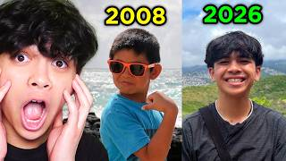
4.54xReacting to THE RISE OF NICO!NicoBlox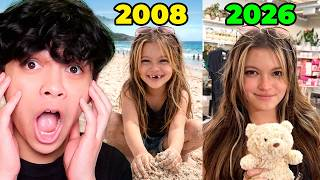
3.48xReacting to THE RISE OF ZOEY!NicoBlox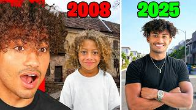
3.46xReacting To "The Rise Of Foltyn" Foltyn Family
Foltyn Family- 0.62xReacting To YOUR Youtube Shorts About Me...MoreNizarisaqt
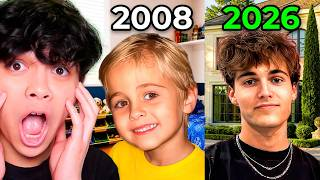
0.48xReacting to THE RISE OF SHADY!NicoBlox
All 19 uploads, the rule that picked them, and the channels
Every upload in the crawled catalogues whose title matches this shape, misses included; the projection is the median of all of them. All real-life: face-cam reactions.
| Upload | Channel | Views | Lift | Basis | |
|---|---|---|---|---|---|
| REACTING TO ME IN A ZHONG VIDEO?! | NicoBlox | 2.9M | 16.29x | lifetime views ÷ the channel's median upload aged 28 to 360 days (178K) | |
| Reacting to THE RISE OF NICO! | NicoBlox | 809K | 4.54x | lifetime views ÷ the channel's median upload aged 28 to 360 days (178K) | |
| Reacting to THE RISE OF ZOEY! | NicoBlox | 620K | 3.48x | lifetime views ÷ the channel's median upload aged 28 to 360 days (178K) | |
| Reacting To "The Rise Of Foltyn" | Foltyn Family | 9M | 3.46x | lifetime views ÷ the channel's median upload aged 28 to 360 days (2.6M) | |
| Reacting To The CRAZIEST MM2 Clips... (his own) | Nizarisaqt | 663K | 3.15x | repo outlier score: first-28-day views against contemporaries |
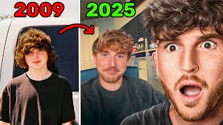 | Reacting To "The Rise Of Caylus" | CaylusBlox | 3.4M | 2.83x | lifetime views ÷ the channel's median upload aged 28 to 360 days (1.2M) |
| AI VIDEOS ABOUT ME! | Foltyn Family | 7.3M | 2.81x | lifetime views ÷ the channel's median upload aged 28 to 360 days (2.6M) | |
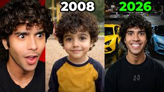 | Reacting to "The Rise of Cash" | CashBlox | 2.9M | 2.64x | lifetime views ÷ the channel's median upload aged 28 to 360 days (1.1M) |
| Reacting to TikToks of Me | Cash Marco | 3.3M | 2.36x | lifetime views ÷ channel median (1.4M) |
| Reacting to YOUR TikToks About Me... (his own) | MoreNizarisaqt | 470K | 2.27x | repo outlier score: first-28-day views against contemporaries |
| REACTING TO AI VIDEOS ABOUT ME.. | CaylusBlox | 2.1M | 1.75x | lifetime views ÷ the channel's median upload aged 28 to 360 days (1.2M) | |
| Reacting to THE RISE OF CASH! | NicoBlox | 279K | 1.57x | lifetime views ÷ the channel's median upload aged 28 to 360 days (178K) | |
| REACTING TO MY OWN AI VIDEOS! | Foltyn Family | 3.5M | 1.35x | lifetime views ÷ the channel's median upload aged 28 to 360 days (2.6M) | |
| REACTING TO AI VIDEOS ABOUT ME! | Foltyn Family | 3.2M | 1.23x | lifetime views ÷ the channel's median upload aged 28 to 360 days (2.6M) | |
| Reacting to TikToks About Me | Cash Marco | 1.7M | 1.21x | lifetime views ÷ channel median (1.4M) |
| Reacting To My OWN AI VIDEOS.. | CaylusBlox | 1.3M | 1.08x | lifetime views ÷ the channel's median upload aged 28 to 360 days (1.2M) | |
| Reacting To My OWN AI VIDEOS.. | Foltyn Family | 2.1M | 0.81x | lifetime views ÷ the channel's median upload aged 28 to 360 days (2.6M) | |
| Reacting To YOUR Youtube Shorts About Me... (his own) | MoreNizarisaqt | 188K | 0.62x | repo outlier score: first-28-day views against contemporaries |
| Reacting to THE RISE OF SHADY! | NicoBlox | 86K | 0.48x | lifetime views ÷ the channel's median upload aged 28 to 360 days (178K) |
NicoBlox4.12M subscribers281 uploads aged 28 to 360 days · mean 379K · median 178K (lifetime)Foltyn Family13.3M subscribers296 uploads aged 28 to 360 days · mean 3.2M · median 2.6M (lifetime)Nizarisaqt2.62M subscribers317 uploads aged 28 to 360 days · mean 410K · median 334K (lifetime)CaylusBlox11.1M subscribers378 uploads aged 28 to 360 days · mean 1.8M · median 1.2M (lifetime) CashBlox5.15M subscribers304 uploads aged 28 to 360 days · mean 1.5M · median 1.1M (lifetime)Cash Marco1.7M subscribersno uploads in the past 360 days (last upload 2025-06-14) · lifetime mean 1.9M · median 1.4M over 145 uploadsMoreNizarisaqt460K subscribers438 uploads aged 28 to 360 days · mean 150K · median 122K (first 28 days)
CashBlox5.15M subscribers304 uploads aged 28 to 360 days · mean 1.5M · median 1.1M (lifetime)Cash Marco1.7M subscribersno uploads in the past 360 days (last upload 2025-06-14) · lifetime mean 1.9M · median 1.4M over 145 uploadsMoreNizarisaqt460K subscribers438 uploads aged 28 to 360 days · mean 150K · median 122K (first 28 days)
{kind=link}
Why this idea
The 'Rise of' reaction read 4.54x on NicoBlox, 3.46x on Foltyn Family, 2.83x on CaylusBlox and 2.64x on CashBlox, each about the creator himself.
The projection is the format's: 265K × 2.27, the median of the 19 uploads in Reacting to videos about me. The evidence is for the shape, so all five ideas in a format share it.
Thumbnail concept. Social UI. Text: THE RISE. Niz at the right of frame, hand over mouth, facing a big screen playing a fan-made 'The Rise of Nizarisaqt' title card with a timeline from his first avatar to now. Dark room lit by the screen.

{kind=link}
Why this idea
Foltyn Family's first AI-video reaction read 2.81x and the next two, posted the same month, 1.35x and 1.23x. CaylusBlox's two read 1.75x and 1.08x.
The projection is the format's: 265K × 2.27, the median of the 19 uploads in Reacting to videos about me. The evidence is for the shape, so all five ideas in a format share it.
Thumbnail concept. Social UI. Text: AI ME?!. Split frame: an uncanny AI render of Niz in a video-app frame on the left, the real Niz on the right leaning back in disbelief. Clean light background.

{kind=link}
Why this idea
The same reaction shape, with his brother in the animations rather than on camera. The brother already reads above median on the main channel when he judges Nizar (1.90x, 1.68x, 1.37x).
The projection is the format's: 265K × 2.27, the median of the 19 uploads in Reacting to videos about me. The evidence is for the shape, so all five ideas in a format share it.
Thumbnail concept. Posed portrait. Text: THAT'S ME. Niz pointing at a monitor showing a cartoon version of himself and his brother, mouth open. Warm desk light, one screen, no other props.

{kind=link}
Why this idea
His own 'Reacting To The CRAZIEST MM2 Clips' read 3.15x on the main channel; this is the face-cam version.
The projection is the format's: 265K × 2.27, the median of the 19 uploads in Reacting to videos about me. The evidence is for the shape, so all five ideas in a format share it.
Thumbnail concept. Compelling scene. Text: HOW?!. An MM2 round frozen mid-throw on a big screen, Niz in the foreground gripping his head. The knife's glow is the only bright colour.

{kind=link}
Why this idea
MoreNizarisaqt's 'I Let Roblox Players DRAW ME' read 1.92x; this uses the fans' own art.
The projection is the format's: 265K × 2.27, the median of the 19 uploads in Reacting to videos about me. The evidence is for the shape, so all five ideas in a format share it.
Thumbnail concept. Repetition of objects. Text: 10/10?. A wall of pinned fan drawings of Niz, Niz holding a handwritten scorecard up to the lens. Bright plain wall.
12Roblox food, made real SoloHigh confidence
Two channels on the list ate Steal a Brainrot's food for real, and both landed about three times their typical upload: CashBlox 3.09x and Foltyn Family 3.04x. Nizar's own biggest outlier of the year is a food penalty, sour candy at 5.50x.
8 uploads from 3 channels plus Nizar's own · median 1.76x · each idea ~466K projected (298K to 652K) · ideas #106 to #110
Caution. Not every eating video worked: BriannaPlayz's satisfying-Roblox-food video read 0.21x, and Nizar's hottest-chocolate penalty 0.57x. The five ideas spread the shape across five games instead of repeating Steal a Brainrot.
- 5.50xIf I DIE I Eat SOUR CANDY in MM2Nizarisaqt
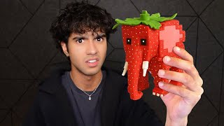
3.09x- 3.04xEating Steal A Brainrot Foods In Real Life!Foltyn Family
- 2.00xEating EVERY ASMR FOOD..CashBlox
- 0.57x
- 0.21xEating The Most Satisfying ROBLOX ASMR Food..
 BriannaPlayz
BriannaPlayz
All 8 uploads, the rule that picked them, and the channels
Every upload in the crawled catalogues whose title matches this shape, misses included; the projection is the median of all of them. Real-life eating on camera, including Nizar's own food penalties.
| Upload | Channel | Views | Lift | Basis | |
|---|---|---|---|---|---|
| If I DIE I Eat SOUR CANDY in MM2 (his own) | Nizarisaqt | 1.2M | 5.50x | repo outlier score: first-28-day views against contemporaries |
| Eating Steal a Brainrot in Real Life | CashBlox | 3.4M | 3.09x | lifetime views ÷ the channel's median upload aged 28 to 360 days (1.1M) | |
| Eating Steal A Brainrot Foods In Real Life! | Foltyn Family | 7.9M | 3.04x | lifetime views ÷ the channel's median upload aged 28 to 360 days (2.6M) | |
| Eating EVERY ASMR FOOD.. | CashBlox | 2.2M | 2.00x | lifetime views ÷ the channel's median upload aged 28 to 360 days (1.1M) | |
| MM2, But If I DIE, I Eat EXOTIC SNACKS (his own) | Nizarisaqt | 371K | 1.52x | repo outlier score: first-28-day views against contemporaries |
| Every Time I DIE, EAT Different COUNTRIES FOOD! (MM2) (his own) | Nizarisaqt | 336K | 1.38x | repo outlier score: first-28-day views against contemporaries |
| If I Fall In TOWER OF HELL, I Have to Eat The HOTTEST CHOCOLATE (his own) | Nizarisaqt | 152K | 0.57x | repo outlier score: first-28-day views against contemporaries | |
| Eating The Most Satisfying ROBLOX ASMR Food.. | BriannaPlayz | 75K | 0.21x | lifetime views ÷ the channel's median upload aged 28 to 360 days (362K) |
Nizarisaqt2.62M subscribers317 uploads aged 28 to 360 days · mean 410K · median 334K (lifetime)CashBlox5.15M subscribers304 uploads aged 28 to 360 days · mean 1.5M · median 1.1M (lifetime)Foltyn Family13.3M subscribers296 uploads aged 28 to 360 days · mean 3.2M · median 2.6M (lifetime)BriannaPlayz6.44M subscribers157 uploads aged 28 to 360 days · mean 786K · median 362K (lifetime)
{kind=link}
Why this idea
Eating a Roblox game's food for real read 3.09x on CashBlox and 3.04x on Foltyn Family, both on Steal a Brainrot. This takes the shape to a second game.
The projection is the format's: 265K × 1.76, the median of the 8 uploads in Roblox food, made real. The evidence is for the shape, so all five ideas in a format share it.
Thumbnail concept. Repetition of objects. Text: RAREST. A long table laid out like the Grow a Garden seed shop with real fruit in rows, Niz holding the rarest one up to the lens, eyes wide. Bright green backdrop.

{kind=link}
Why this idea
Cash Marco and Nico Polo ran 24-hour eating constraints five times, at 1.00x to 2.50x. This version makes the menu Roblox.
The projection is the format's: 265K × 1.76, the median of the 8 uploads in Roblox food, made real. The evidence is for the shape, so all five ideas in a format share it.
Thumbnail concept. Specific day. Text: 24 HOURS. Niz holding a red soda can and a cheeseburger, a wall clock at 11:59 behind him, a tray of Roblox-styled food in front. Bold red background.

{kind=link}
Why this idea
His food penalties are his strongest outliers (sour candy 5.50x). This keeps the candy and MM2 and drops the gameplay.
The projection is the format's: 265K × 1.76, the median of the 8 uploads in Roblox food, made real. The evidence is for the shape, so all five ideas in a format share it.
Thumbnail concept. Before and after. Text: MM2 CANDY. Left: MM2's candy icons on a dark panel. Right: the homemade versions on a plate. Niz in the middle holding one up, surprised.

{kind=link}
Why this idea
Unspeakable's real-life 99 Nights read 2.30x. This is the food half of it, filmed alone.
The projection is the format's: 265K × 1.76, the median of the 8 uploads in Roblox food, made real. The evidence is for the shape, so all five ideas in a format share it.
Thumbnail concept. Compelling scene. Text: NIGHT 1. Night campfire in the backyard, Niz holding a skewer over the flames, two glowing eyes in the dark trees behind him.

{kind=link}
Why this idea
The exact shape CashBlox and Foltyn Family ran, at 3.09x and 3.04x.
The projection is the format's: 265K × 1.76, the median of the 8 uploads in Roblox food, made real. The evidence is for the shape, so all five ideas in a format share it.
Thumbnail concept. Repetition of objects. Text: RANKED. A row of foods styled as brainrots (a cappuccino in a tutu, a banana with a face), Niz mid-bite on the banana, laughing.
13Opening 100, in real life SoloHigh confidence
CaylusBlox's two real-life openings, 100 lucky blocks and 100 viral mystery dumplings, read 3.67x and 3.17x. Nizar's own squishy-per-death video read 1.64x.
5 uploads from 3 channels plus Nizar's own · median 1.64x · each idea ~434K projected (278K to 607K) · ideas #111 to #115
Caution. The count alone doesn't decide it: Foltyn Family's upload with the same lucky-block title read 0.77x, and Lana's Life's squishy unboxing 1.06x.
- 3.67xOpening 100 LUCKY BLOCKS in Real Life!CaylusBlox
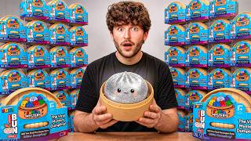
3.17xI Opened 100 VIRAL MYSTERY DUMPLINGS!CaylusBlox- 1.64x
- 1.06x
- 0.77xOpening 100 LUCKY BLOCKS In Real Life!Foltyn Family
All 5 uploads, the rule that picked them, and the channels
Every upload in the crawled catalogues whose title matches this shape, misses included; the projection is the median of all of them. All real-life openings.
| Upload | Channel | Views | Lift | Basis | |
|---|---|---|---|---|---|
| Opening 100 LUCKY BLOCKS in Real Life! | CaylusBlox | 4.4M | 3.67x | lifetime views ÷ the channel's median upload aged 28 to 360 days (1.2M) | |
| I Opened 100 VIRAL MYSTERY DUMPLINGS! | CaylusBlox | 3.8M | 3.17x | lifetime views ÷ the channel's median upload aged 28 to 360 days (1.2M) | |
| MM2 But Everytime I Die, I OPEN A SQUISHY... (his own) | Nizarisaqt | 418K | 1.64x | repo outlier score: first-28-day views against contemporaries |
| ROBLOX SQUISHY UNBOXING ASMR VS IN REAL LIFE!! | Lana's Life | 922K | 1.06x | lifetime views ÷ the channel's median upload aged 28 to 360 days (870K) |
| Opening 100 LUCKY BLOCKS In Real Life! | Foltyn Family | 2M | 0.77x | lifetime views ÷ the channel's median upload aged 28 to 360 days (2.6M) |
CaylusBlox11.1M subscribers378 uploads aged 28 to 360 days · mean 1.8M · median 1.2M (lifetime)Nizarisaqt2.62M subscribers317 uploads aged 28 to 360 days · mean 410K · median 334K (lifetime)Lana's Life9.99M subscribers222 uploads aged 28 to 360 days · mean 1.1M · median 870K (lifetime)Foltyn Family13.3M subscribers296 uploads aged 28 to 360 days · mean 3.2M · median 2.6M (lifetime)
{kind=link}
Why this idea
CaylusBlox's 'Opening 100 LUCKY BLOCKS in Real Life!' read 3.67x. Foltyn Family's upload with the same title read 0.77x.
The projection is the format's: 265K × 1.64, the median of the 5 uploads in Opening 100, in real life. The evidence is for the shape, so all five ideas in a format share it.
Thumbnail concept. Repetition of objects. Text: 100. A wall of yellow question-mark blocks stacked to the ceiling, Niz in front holding one open with light spilling out.

{kind=link}
Why this idea
CaylusBlox's version read 3.17x. Squishy dumplings are already a MoreNizarisaqt subject: 'Finding EVERY DUMPLING' read 1.95x and 'GUESS THE DUMPLING' 1.91x.
The projection is the format's: 265K × 1.64, the median of the 5 uploads in Opening 100, in real life. The evidence is for the shape, so all five ideas in a format share it.
Thumbnail concept. Size difference. Text: 100. A pile of tiny dumpling squishies around one giant dumpling, Niz hugging the giant one. Soft pastel background.

{kind=link}
Why this idea
The same shape as CaylusBlox's two openings (3.67x and 3.17x), with official Roblox toys as the prize pool.
The projection is the format's: 265K × 1.64, the median of the 5 uploads in Opening 100, in real life. The evidence is for the shape, so all five ideas in a format share it.
Thumbnail concept. Product. Text: RAREST?. A pile of Roblox toy boxes, one figure glowing gold in Niz's hand, his face lit by it.

{kind=link}
Why this idea
His own 'MM2 But Everytime I Die, I OPEN A SQUISHY' read 1.64x, and Lana's Life's squishy unboxing split 1.06x.
The projection is the format's: 265K × 1.64, the median of the 5 uploads in Opening 100, in real life. The evidence is for the shape, so all five ideas in a format share it.
Thumbnail concept. Graphical representation. Text: SQUISHIEST. A hand-drawn squish meter from 1 to 10 behind Niz, who squeezes a squishy flat. Colourful squishies around him.

{kind=link}
Why this idea
MM2 is the main channel's game. The opening shape runs from 0.77x to 3.67x in this data; this puts his own game's rarity system inside it.
The projection is the format's: 265K × 1.64, the median of the 5 uploads in Opening 100, in real life. The evidence is for the shape, so all five ideas in a format share it.
Thumbnail concept. Repetition of objects. Text: GODLY?. Stacks of sealed boxes printed with knife silhouettes, Niz holding a glowing foam knife overhead.
14Roblox vs real life SoloHigh confidence
The game on one side, the same thing for real on the other. BriannaPlayz's avatar-to-real reveal read 10.22x and Kat's four Roblox-versus-real mukbangs ran from 4.22x to 0.43x. Lana's Life has made the Dress to Impress version five times.
11 uploads from 3 channels · median 1.27x · each idea ~335K projected (214K to 469K) · ideas #116 to #120
Caution. One winner isn't a format: BriannaPlayz's 10.22x is one upload, and without it the other ten have a median of 1.16x. Lana's Life's six splits sit near 1.05x.
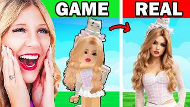
10.22xEXPOSING Roblox Youtuber AVATAR in Real Life!BriannaPlayz- 4.22x
- 2.77x
- 1.84x
 0.43x
0.43x- 0.36xGRWM IN DRESS TO IMPRESS AND IRL...Lana's Life
All 11 uploads, the rule that picked them, and the channels
Every upload in the crawled catalogues whose title matches this shape, misses included; the projection is the median of all of them. Every upload is a split: the game on one side, the real version on the other.
| Upload | Channel | Views | Lift | Basis | |
|---|---|---|---|---|---|
| EXPOSING Roblox Youtuber AVATAR in Real Life! | BriannaPlayz | 3.7M | 10.22x | lifetime views ÷ the channel's median upload aged 28 to 360 days (362K) | |
| ROBLOX MUKBANG GAME vs IN REAL LIFE ASMR! | Kat | 3.2M | 4.22x | lifetime views ÷ the channel's median upload aged 28 to 360 days (759K) | |
| ROBLOX MUKBANG ASMR vs IN REAL LIFE! | Kat | 2.1M | 2.77x | lifetime views ÷ the channel's median upload aged 28 to 360 days (759K) | |
| ROBLOX MUKBANG DATE vs IN REAL LIFE ASMR! | Kat | 1.4M | 1.84x | lifetime views ÷ the channel's median upload aged 28 to 360 days (759K) |
| Dress to Impress… But I Can ONLY USE KATSEYE Outfits IRL | Lana's Life | 1.2M | 1.38x | lifetime views ÷ the channel's median upload aged 28 to 360 days (870K) | |
| Dress to Impress... BUT Using ONLY IRL Clothes From a Shopping Spree W/ @RussoBloxy | Lana's Life | 1.1M | 1.27x | lifetime views ÷ the channel's median upload aged 28 to 360 days (870K) | |
| ROBLOX SQUISHY UNBOXING ASMR VS IN REAL LIFE!! | Lana's Life | 922K | 1.06x | lifetime views ÷ the channel's median upload aged 28 to 360 days (870K) |
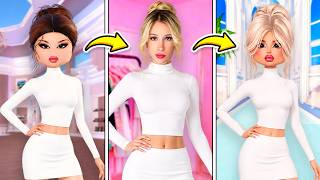 | RECREATING POPULAR DRESS TO IMPRESS CHARACTERS IRL... | Lana's Life | 910K | 1.05x | lifetime views ÷ the channel's median upload aged 28 to 360 days (870K) |
| DRESS TO IMPRESS... BUT I can ONLY USE CLOTHES I OWN IRL... | Lana's Life | 765K | 0.88x | lifetime views ÷ the channel's median upload aged 28 to 360 days (870K) | |
| ROBLOX BREAKFAST MUKBANG vs IN REAL LIFE ASMR! | Kat | 329K | 0.43x | lifetime views ÷ the channel's median upload aged 28 to 360 days (759K) |
| GRWM IN DRESS TO IMPRESS AND IRL... | Lana's Life | 316K | 0.36x | lifetime views ÷ the channel's median upload aged 28 to 360 days (870K) |
BriannaPlayz6.44M subscribers157 uploads aged 28 to 360 days · mean 786K · median 362K (lifetime)Kat12.2M subscribers155 uploads aged 28 to 360 days · mean 1M · median 759K (lifetime)Lana's Life9.99M subscribers222 uploads aged 28 to 360 days · mean 1.1M · median 870K (lifetime){kind=link}
Why this idea
BriannaPlayz's avatar-to-real reveal read 10.22x, the largest single number in this format. One upload is not a format, so the projection uses the format's median.
The projection is the format's: 265K × 1.27, the median of the 11 uploads in Roblox vs real life. The evidence is for the shape, so all five ideas in a format share it.
Thumbnail concept. Before and after. Text: GAME vs REAL. Left half: his Roblox avatar posed. Right half: Niz in the identical outfit in the same pose. Hard split down the middle.

{kind=link}
Why this idea
Kat's four Roblox-versus-real ASMR mukbangs ran from 4.22x to 0.43x. In-game ASMR towers are among the list's biggest reads (Aphmau Shuki 5.68x).
The projection is the format's: 265K × 1.27, the median of the 11 uploads in Roblox vs real life. The evidence is for the shape, so all five ideas in a format share it.
Thumbnail concept. Before and after. Text: REAL?. Left: a Roblox ASMR tower screenshot. Right: a real clicky keyboard in close-up, Niz in headphones leaning into the mic.

{kind=link}
Why this idea
Lana's Life has made this five times at a median near 1.05x: the steadier, lower-ceiling version of the format.
The projection is the format's: 265K × 1.27, the median of the 11 uploads in Roblox vs real life. The evidence is for the shape, so all five ideas in a format share it.
Thumbnail concept. Before and after. Text: ONLY MY CLOSET. Left: a Dress to Impress avatar on the runway. Right: Niz in his closet holding up an outfit, doubtful face.

{kind=link}
Why this idea
MoreNizarisaqt's 'Building the BIGGEST Amusement Park In Roblox' read 1.74x; the split is this format's structure.
The projection is the format's: 265K × 1.27, the median of the 11 uploads in Roblox vs real life. The evidence is for the shape, so all five ideas in a format share it.
Thumbnail concept. Before and after. Text: SCARIER?. Left: a blocky Roblox coaster. Right: Niz screaming on a real coaster drop.

{kind=link}
Why this idea
The same split as Kat's and Lana's Life's, with Adopt Me as the game half.
The projection is the format's: 265K × 1.27, the median of the 11 uploads in Roblox vs real life. The evidence is for the shape, so all five ideas in a format share it.
Thumbnail concept. Before and after. Text: REAL?. Left: an Adopt Me pet. Right: Niz holding the real animal it's based on, grinning.
15Fill it, then escape it SoloMedium confidence
Filling a house with thousands of one thing, or escaping a thousand layers of it, is Unspeakable's most repeated real-life shape: nine uploads, three of them above 2.3x. Stokes Twins' two house fills with packing peanuts read 1.60x and 1.07x.
11 uploads from 2 channels · median 1.60x · each idea ~423K projected (271K to 593K) · ideas #121 to #125
Caution. Two channels, and one of them made nine, so this is closer to Unspeakable's format than the niche's. His water-balloon layers read 0.81x.
All 11 uploads, the rule that picked them, and the channels
Every upload in the crawled catalogues whose title matches this shape, misses included; the projection is the median of all of them. Real-life only. Three in-game uploads with the same words (OTTER ROBLOX, SSundee, CashBlox) are left out.
| Upload | Channel | Views | Lift | Basis | |
|---|---|---|---|---|---|
| I Escaped 1,000 Layers of ICE! | Unspeakable | 12.9M | 3.64x | repo outlier score: public views against the channel's contemporaries | |
| 1,000 Extreme Ways To FILL MY HOUSE! | Unspeakable | 16.3M | 2.58x | repo outlier score: public views against the channel's contemporaries | |
| Escaping 100 Layers of SLIME vs STEEL | Unspeakable | 8.4M | 2.38x | repo outlier score: public views against the channel's contemporaries | |
| Escaping 1,000 Layers of Packing Peanuts! | Unspeakable | 6.4M | 1.91x | repo outlier score: public views against the channel's contemporaries | |
| I Escaped 1,000 Layers of CARDBOARD! | Unspeakable | 11.1M | 1.90x | repo outlier score: public views against the channel's contemporaries | |
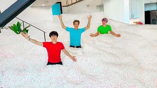 | FILLING MY ENTIRE HOUSE WITH PACKING PEANUTS!! | Stokes Twins | 57.8M | 1.60x | repo outlier score: public views against the channel's contemporaries |
| ESCAPING 1,000 EXTREME LAYERS! | Unspeakable | 4.5M | 1.30x | repo outlier score: public views against the channel's contemporaries | |
| I Filled My House with LAVA vs ICE! | Unspeakable | 3.9M | 1.12x | repo outlier score: public views against the channel's contemporaries | |
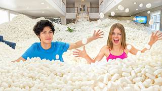 | I FILLED MY ENTIRE HOUSE WITH PACKING PEANUTS!! | Stokes Twins | 69.6M | 1.07x | repo outlier score: public views against the channel's contemporaries |
| I Filled a School with Packing Peanuts! | Unspeakable | 5.7M | 0.95x | repo outlier score: public views against the channel's contemporaries | |
| Escaping 1,000 Layers GIANT WATER BALLOONS! | Unspeakable | 3.5M | 0.81x | repo outlier score: public views against the channel's contemporaries |

{kind=link}
Why this idea
Filling a house read 2.58x on Unspeakable and 1.60x on Stokes Twins.
The projection is the format's: 265K × 1.60, the median of the 11 uploads in Fill it, then escape it. The evidence is for the shape, so all five ideas in a format share it.
Thumbnail concept. Repetition of objects. Text: 10,000. A bedroom filled to the ceiling with colourful squishies, only Niz's head and one arm sticking out.

{kind=link}
Why this idea
His own 'ROBLOX +1 CLICKY KEYBOARD ESCAPE' read 2.85x; Unspeakable's layer escapes read 0.81x to 3.64x.
The projection is the format's: 265K × 1.60, the median of the 11 uploads in Fill it, then escape it. The evidence is for the shape, so all five ideas in a format share it.
Thumbnail concept. Compelling scene. Text: 100 LAYERS. Niz boxed inside walls of stacked keyboards, peering through a gap, RGB light leaking out.

{kind=link}
Why this idea
The cheapest material in the format. Unspeakable's cardboard and packing-peanut escapes both read 1.90x.
The projection is the format's: 265K × 1.60, the median of the 11 uploads in Fill it, then escape it. The evidence is for the shape, so all five ideas in a format share it.
Thumbnail concept. Size difference. Text: 1,000. Niz as a giant bubble-wrap ball with only his face showing, a timer in the corner.

{kind=link}
Why this idea
Stokes Twins' two house fills read 1.60x and 1.07x; Unspeakable's lava-versus-ice fill read 1.12x.
The projection is the format's: 265K × 1.60, the median of the 11 uploads in Fill it, then escape it. The evidence is for the shape, so all five ideas in a format share it.
Thumbnail concept. Repetition of objects. Text: 100,000. Niz waist-deep in a room of colourful water beads, arms up, beads flying.

{kind=link}
Why this idea
Unspeakable's six layer escapes read between 0.81x and 3.64x.
The projection is the format's: 265K × 1.60, the median of the 11 uploads in Fill it, then escape it. The evidence is for the shape, so all five ideas in a format share it.
Thumbnail concept. Compelling scene. Text: ESCAPE. Niz inside a cube of foam blocks painted in Roblox brick textures, pushing one block out.
16One Roblox game, played for real SoloMedium confidence
Unspeakable has turned eleven games and shows into real-life videos, led by 99 Nights in the Forest (2.30x) and Five Nights at Freddy's (2.26x). With Stokes Twins' six, the seventeen have a median of 1.12x.
17 uploads from 2 channels · median 1.12x · each idea ~296K projected (190K to 415K) · ideas #126 to #130
Caution. Eight of the seventeen read below 1.1x, and Stokes Twins' Squid Game prize video read 0.20x.
All 17 uploads, the rule that picked them, and the channels
Every upload in the crawled catalogues whose title matches this shape, misses included; the projection is the median of all of them. Unspeakable and Stokes Twins film everything in real life, so every title that names a game or show world counts. On the Roblox channels, NicoBlox's two 'in Real Life' brainrot uploads and Techy's two IRL-avatar uploads are in-game and left out.
| Upload | Channel | Views | Lift | Basis | |
|---|---|---|---|---|---|
| 99 Nights In The Forest In REAL LIFE! | Unspeakable | 11M | 2.30x | repo outlier score: public views against the channel's contemporaries | |
| 67 Nights In Five Nights At Freddy’s | Unspeakable | 11.7M | 2.26x | repo outlier score: public views against the channel's contemporaries | |
| I Played Steal A Brainrot In REAL LIFE! | Unspeakable | 10.3M | 1.78x | repo outlier score: public views against the channel's contemporaries | |
| Trying The SQUID GAME Honeycomb Candy Challenge | Stokes Twins | 88.4M | 1.78x | repo outlier score: public views against the channel's contemporaries | |
| 999 Nights In The Forest In REAL LIFE! | Unspeakable | 6.2M | 1.30x | repo outlier score: public views against the channel's contemporaries | |
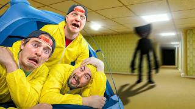 | Surviving 99 Nights In The BACKROOMS! | Unspeakable | 4.8M | 1.26x | repo outlier score: public views against the channel's contemporaries |
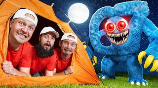 | 67 Nights In Steal a Brainrot! | Unspeakable | 4.1M | 1.23x | repo outlier score: public views against the channel's contemporaries |
| Sleepover In Abandoned Poppy Playtime FACTORY! | Unspeakable | 4M | 1.15x | repo outlier score: public views against the channel's contemporaries | |
| 5 School Nights with Peppa Pig | Unspeakable | 4.3M | 1.12x | repo outlier score: public views against the channel's contemporaries | |
| Playing SQUID GAME In Real Life! | Stokes Twins | 54.4M | 1.09x | repo outlier score: public views against the channel's contemporaries | |
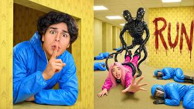 | I Survived The Backrooms In Real Life.. | Stokes Twins | 21.7M | 0.92x | repo outlier score: public views against the channel's contemporaries |
| How To Train Your Dragon In Real Life | Unspeakable | 2.7M | 0.81x | repo outlier score: public views against the channel's contemporaries | |
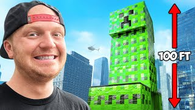 | I Survived Worlds Biggest Minecraft Creeper! | Unspeakable | 3.5M | 0.69x | repo outlier score: public views against the channel's contemporaries |
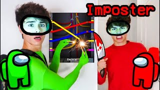 | We Played AMONG US But IN REAL LIFE!! (Imposter IQ 9,999,999%) | Stokes Twins | 7.8M | 0.63x | repo outlier score: public views against the channel's contemporaries |
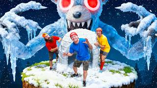 | 99 Nights In The WINTER FOREST! | Unspeakable | 4.1M | 0.61x | repo outlier score: public views against the channel's contemporaries |
| LAST TO LEAVE BACKROOMS! | Stokes Twins | 13.6M | 0.58x | repo outlier score: public views against the channel's contemporaries | |
| Play Squid Game 3, Win $100,000! | Stokes Twins | 14.4M | 0.20x | repo outlier score: public views against the channel's contemporaries |

{kind=link}
Why this idea
Unspeakable's real-life 99 Nights read 2.30x and his real-life Steal a Brainrot 1.78x.
The projection is the format's: 265K × 1.12, the median of the 17 uploads in One Roblox game, played for real. The evidence is for the shape, so all five ideas in a format share it.
Thumbnail concept. Before and after. Text: DAY 30. Left: Niz holding a seed packet over an empty pot on day 1. Right: Niz in a full garden on day 30.

{kind=link}
Why this idea
The same shape as Unspeakable's game recreations, with a rule that sets the ending.
The projection is the format's: 265K × 1.12, the median of the 17 uploads in One Roblox game, played for real. The evidence is for the shape, so all five ideas in a format share it.
Thumbnail concept. Landscape. Text: LEGENDARY?. Niz alone on a dock at dusk, rod bent hard, a laminated rarity chart taped to the tackle box.

{kind=link}
Why this idea
Real-life game recreations read between 0.20x and 2.30x across Unspeakable and Stokes Twins.
The projection is the format's: 265K × 1.12, the median of the 17 uploads in One Roblox game, played for real. The evidence is for the shape, so all five ideas in a format share it.
Thumbnail concept. Posed action shot. Text: FLOAT?. Niz paddling a cardboard boat on a lake, water splashing, the boat sagging at the front.

{kind=link}
Why this idea
Game jobs already read on MoreNizarisaqt: 'Working NIGHTSHIFT At A ICE CREAM SHOP' 2.57x and 'Don't Work the SHAWARMA Night Shift' 2.45x, both in-game.
The projection is the format's: 265K × 1.12, the median of the 17 uploads in One Roblox game, played for real. The evidence is for the shape, so all five ideas in a format share it.
Thumbnail concept. Posed action shot. Text: EVERY JOB. Niz in a pizza-shop apron tossing dough, a delivery bag over his shoulder.

{kind=link}
Why this idea
Eight of this format's seventeen uploads read below 1.1x, so the projection is its 1.12x median, not its best upload.
The projection is the format's: 265K × 1.12, the median of the 17 uploads in One Roblox game, played for real. The evidence is for the shape, so all five ideas in a format share it.
Thumbnail concept. Compelling scene. Text: SURVIVE. Niz braced on a small wooden platform in the backyard, sprinklers raining sideways, a foam meteor in mid-air.
17Me vs the Akinator SoloMedium confidence
Two channels have run it as a series, Cash Marco six times and BriannaPlayz eight, and the fourteen have a median of 1.09x. It needs one person and a screen.
14 uploads from 2 channels · median 1.09x · each idea ~289K projected (185K to 405K) · ideas #131 to #135
Caution. Both series wore down. Cash Marco's first four ran 0.71x to 2.43x and his last two 0.93x and 0.22x, so the five below are meant to be spread across the calendar, not posted in a row.
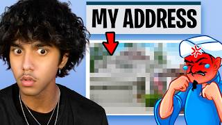
2.43xI Defeated the AkinatorCash Marco- 2.00xI Killed The AkinatorCash Marco
- 1.79xCash Plays The AKINATOR…Cash Marco
- 1.74xI Broke The Akinator’s Heart…BriannaPlayz
- 0.64xCan AKINATOR Guess ANIMAL HOSPITAL?BriannaPlayz
- 0.22x
All 14 uploads, the rule that picked them, and the channels
Every upload in the crawled catalogues whose title matches this shape, misses included; the projection is the median of all of them. Face-cam with the web game on screen.
| Upload | Channel | Views | Lift | Basis | |
|---|---|---|---|---|---|
| I Defeated the Akinator | Cash Marco | 3.4M | 2.43x | lifetime views ÷ channel median (1.4M) | |
| I Killed The Akinator | Cash Marco | 2.8M | 2.00x | lifetime views ÷ channel median (1.4M) | |
| Cash Plays The AKINATOR… | Cash Marco | 2.5M | 1.79x | lifetime views ÷ channel median (1.4M) | |
| I Broke The Akinator’s Heart… | BriannaPlayz | 630K | 1.74x | lifetime views ÷ the channel's median upload aged 28 to 360 days (362K) | |
| I Made The Akinator Fall in Love With Me... | BriannaPlayz | 581K | 1.60x | lifetime views ÷ the channel's median upload aged 28 to 360 days (362K) | |
| I Made The Akinator Have a Crush on Me… | BriannaPlayz | 412K | 1.14x | lifetime views ÷ the channel's median upload aged 28 to 360 days (362K) | |
| I EXPOSED The Akinator’s Secret Girlfriend! | BriannaPlayz | 401K | 1.11x | lifetime views ÷ the channel's median upload aged 28 to 360 days (362K) | |
| I Killed The Akinator... | BriannaPlayz | 391K | 1.08x | lifetime views ÷ the channel's median upload aged 28 to 360 days (362K) | |
| The Akinator Went Insane (0.01% Chance) | Cash Marco | 1.3M | 0.93x | lifetime views ÷ channel median (1.4M) | |
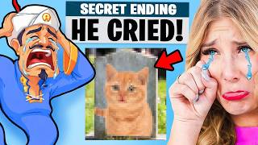 | I Made The Akinator Cry… | BriannaPlayz | 329K | 0.91x | lifetime views ÷ the channel's median upload aged 28 to 360 days (362K) |
| I Made the Akinator Propose to Me | BriannaPlayz | 311K | 0.86x | lifetime views ÷ the channel's median upload aged 28 to 360 days (362K) | |
| Akinator vs ChatGPT - Who Can Guess First? | Cash Marco | 1M | 0.71x | lifetime views ÷ channel median (1.4M) | |
| Can AKINATOR Guess ANIMAL HOSPITAL? | BriannaPlayz | 231K | 0.64x | lifetime views ÷ the channel's median upload aged 28 to 360 days (362K) | |
| I Killed The Akinator… (YOUTUBER EDITION) | Cash Marco | 303K | 0.22x | lifetime views ÷ channel median (1.4M) |
Cash Marco1.7M subscribersno uploads in the past 360 days (last upload 2025-06-14) · lifetime mean 1.9M · median 1.4M over 145 uploadsBriannaPlayz6.44M subscribers157 uploads aged 28 to 360 days · mean 786K · median 362K (lifetime)
{kind=link}
Why this idea
Cash Marco ran the Akinator six times and BriannaPlayz eight; the fourteen have a median of 1.09x.
The projection is the format's: 265K × 1.09, the median of the 14 uploads in Me vs the Akinator. The evidence is for the shape, so all five ideas in a format share it.
Thumbnail concept. Social UI. Text: GUESS ME. A genie question card on screen asking whether the character is a Roblox YouTuber, Niz leaning toward it with a smirk.

{kind=link}
Why this idea
The same shape as Cash Marco's 'I Defeated the Akinator' (2.43x), with brainrots as the subject.
The projection is the format's: 265K × 1.09, the median of the 14 uploads in Me vs the Akinator. The evidence is for the shape, so all five ideas in a format share it.
Thumbnail concept. Social UI. Text: 0 WRONG?. The genie card on screen against a lineup of brainrot figures, Niz with his arms crossed.

{kind=link}
Why this idea
MM2 is the main channel's game; the shape's median is 1.09x.
The projection is the format's: 265K × 1.09, the median of the 14 uploads in Me vs the Akinator. The evidence is for the shape, so all five ideas in a format share it.
Thumbnail concept. Social UI. Text: 50 KNIVES. A grid of MM2 knife icons with a question mark over the genie, Niz holding a foam knife.

{kind=link}
Why this idea
His Moroccan identity already reads on MoreNizarisaqt: 'Roblox Guess The Country!' read 3.48x.
The projection is the format's: 265K × 1.09, the median of the 14 uploads in Me vs the Akinator. The evidence is for the shape, so all five ideas in a format share it.
Thumbnail concept. Social UI. Text: BEAT HIM?. The genie card on screen beside a steaming tagine, Niz pointing at the dish.

{kind=link}
Why this idea
Cash Marco's YouTuber edition read 0.22x, the last and lowest of his six. Post this one last, if at all.
The projection is the format's: 265K × 1.09, the median of the 14 uploads in Me vs the Akinator. The evidence is for the shape, so all five ideas in a format share it.
Thumbnail concept. Social UI. Text: 20 YOUTUBERS. A grid of twenty avatar silhouettes with the genie in the middle, Niz with a hand on his chin.
18Secret rooms, built alone SoloMedium confidence
Stokes Twins have built secret rooms ten times, with a median near 1.05x and a best of 1.77x. Unspeakable's '30 Secret Rooms You'd Never Find' read 5.02x.
14 uploads from 2 channels plus Nizar's own · median 1.05x · each idea ~278K projected (178K to 389K) · ideas #136 to #140
Caution. Unspeakable's next two read 0.77x and 0.62x, and Stokes Twins' swing between 0.37x and 1.77x. The shape holds only a little above median once the first one has been made.
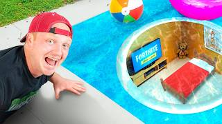
5.02x- 1.86xI Found SAMMY SECRET BASE In Steal A Brainrot..MoreNizarisaqt
- 1.77x
- 1.68x
- 0.45x
- 0.37x
All 14 uploads, the rule that picked them, and the channels
Every upload in the crawled catalogues whose title matches this shape, misses included; the projection is the median of all of them. Real-life builds only. Eight in-game secret-room uploads (Techy, NicoBlox, Lana’s Life) are left out.
| Upload | Channel | Views | Lift | Basis | |
|---|---|---|---|---|---|
| I Built 30 Secret Rooms You’d Never Find! | Unspeakable | 19M | 5.02x | repo outlier score: public views against the channel's contemporaries | |
| I Found SAMMY SECRET BASE In Steal A Brainrot.. (his own) | MoreNizarisaqt | 222K | 1.86x | repo outlier score: first-28-day views against contemporaries | |
| I Built 5 SECRET Rooms In ONE COLOR! | Stokes Twins | 178.2M | 1.77x | repo outlier score: public views against the channel's contemporaries | |
| I Built 5 SECRET Rooms You’d Never Find! | Stokes Twins | 220.3M | 1.68x | repo outlier score: public views against the channel's contemporaries | |
| I Built 4 SECRET Rooms In ONE COLOR! | Stokes Twins | 278.8M | 1.51x | repo outlier score: public views against the channel's contemporaries | |
| I Built 3 SECRET Rooms In School! | Stokes Twins | 222.4M | 1.24x | repo outlier score: public views against the channel's contemporaries | |
| I Built 5 Secret Rooms To Escape EVIL KPop Demon Hunters! | Stokes Twins | 48.2M | 1.08x | repo outlier score: public views against the channel's contemporaries | |
| I Built 5 SECRET Rooms In School! | Stokes Twins | 66.4M | 1.02x | repo outlier score: public views against the channel's contemporaries | |
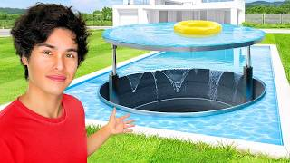 | I Built a SECRET Room You'd Never Find! | Stokes Twins | 124.6M | 0.89x | repo outlier score: public views against the channel's contemporaries |
| I Built 7 SECRET Rooms You'd Never Find! | Stokes Twins | 177.2M | 0.86x | repo outlier score: public views against the channel's contemporaries | |
| 72 Secret Rooms You'd Never Find | Unspeakable | 5.1M | 0.77x | repo outlier score: public views against the channel's contemporaries | |
| Level 1-100 Secret Rooms You'd Never Find! | Unspeakable | 2.5M | 0.62x | repo outlier score: public views against the channel's contemporaries | |
| I Built 67 Secret Rooms In One Color! | Stokes Twins | 31.1M | 0.45x | repo outlier score: public views against the channel's contemporaries | |
| I Built 10 SECRET Rooms You'll Never Believe Exist! | Stokes Twins | 76.8M | 0.37x | repo outlier score: public views against the channel's contemporaries |
MoreNizarisaqt460K subscribers438 uploads aged 28 to 360 days · mean 150K · median 122K (first 28 days)Stokes Twins145M subscribers21 uploads aged 28 to 360 days · mean 44M · median 37.4M (lifetime)
{kind=link}
Why this idea
Stokes Twins' ten secret-room builds swing between 0.37x and 1.77x, with a median near 1.05x.
The projection is the format's: 265K × 1.05, the median of the 14 uploads in Secret rooms, built alone. The evidence is for the shape, so all five ideas in a format share it.
Thumbnail concept. Compelling scene. Text: SECRET. A bookshelf swung open to reveal a neon-lit gaming nook, Niz peeking out from behind it.

{kind=link}
Why this idea
Unspeakable's '30 Secret Rooms You'd Never Find' read 5.02x; his next two read 0.77x and 0.62x.
The projection is the format's: 265K × 1.05, the median of the 14 uploads in Secret rooms, built alone. The evidence is for the shape, so all five ideas in a format share it.
Thumbnail concept. Compelling scene. Text: MM2 ROOM. A small door under the stairs standing open, MM2 knives glowing on the walls inside, Niz crouched in the doorway.

{kind=link}
Why this idea
Secret bases are already a MoreNizarisaqt subject: 'I Found SAMMY SECRET BASE' read 1.86x, in-game.
The projection is the format's: 265K × 1.05, the median of the 14 uploads in Secret rooms, built alone. The evidence is for the shape, so all five ideas in a format share it.
Thumbnail concept. Compelling scene. Text: MY BASE. A closet crossed with red laser lines, plush brainrots on the shelves, Niz ducking under a beam.

{kind=link}
Why this idea
A build small enough for one person; the format's median is 1.05x.
The projection is the format's: 265K × 1.05, the median of the 14 uploads in Secret rooms, built alone. The evidence is for the shape, so all five ideas in a format share it.
Thumbnail concept. Compelling scene. Text: INSIDE?. A gaming desk lifted on a hinge to reveal a lit hidden space below, Niz halfway inside.

{kind=link}
Why this idea
More rooms didn't mean more views for Stokes Twins: their 10-room and 67-room builds read 0.37x and 0.45x.
The projection is the format's: 265K × 1.05, the median of the 14 uploads in Secret rooms, built alone. The evidence is for the shape, so all five ideas in a format share it.
Thumbnail concept. Compelling scene. Text: 3 SECRETS. A cardboard fort with a hidden flap half open, Niz's eyes peeking through.
19The truth about ___ SoloLow confidence
Cash Marco's sit-down explainers read 2.50x ('How Food is ACTUALLY Made!') and 1.71x ('What If You Stopped Blinking?'). The 'truth about' title also read 2.17x for CaylusBlox and 1.29x for Nizar himself, both in-game.
5 uploads from 2 channels plus Nizar's own · median 1.71x · each idea ~453K projected (290K to 635K) · ideas #141 to #145
Caution. Only one channel has made the sit-down version, and its third read 0.54x ('What if You Stopped Breathing?').
- 2.50xHow Food is ACTUALLY Made!Cash Marco
- 2.17xThe TRUTH About Steal a Brainrot..CaylusBlox
- 1.71xWhat If You Stopped Blinking?Cash Marco
- 1.29xThe TRUTH About ROBLOX TOWER GAMES...Nizarisaqt
- 0.54xWhat if You Stopped Breathing?Cash Marco
All 5 uploads, the rule that picked them, and the channels
Every upload in the crawled catalogues whose title matches this shape, misses included; the projection is the median of all of them. Cash Marco's three are sit-down explainers; CaylusBlox's and Nizar's 'truth about' uploads are in-game.
| Upload | Channel | Views | Lift | Basis | |
|---|---|---|---|---|---|
| How Food is ACTUALLY Made! | Cash Marco | 3.5M | 2.50x | lifetime views ÷ channel median (1.4M) |
| The TRUTH About Steal a Brainrot.. | CaylusBlox | 2.6M | 2.17x | lifetime views ÷ the channel's median upload aged 28 to 360 days (1.2M) | |
| What If You Stopped Blinking? | Cash Marco | 2.4M | 1.71x | lifetime views ÷ channel median (1.4M) |
| The TRUTH About ROBLOX TOWER GAMES... (his own) | Nizarisaqt | 335K | 1.29x | repo outlier score: first-28-day views against contemporaries | |
| What if You Stopped Breathing? | Cash Marco | 751K | 0.54x | lifetime views ÷ channel median (1.4M) |
Cash Marco1.7M subscribersno uploads in the past 360 days (last upload 2025-06-14) · lifetime mean 1.9M · median 1.4M over 145 uploadsCaylusBlox11.1M subscribers378 uploads aged 28 to 360 days · mean 1.8M · median 1.2M (lifetime)Nizarisaqt2.62M subscribers317 uploads aged 28 to 360 days · mean 410K · median 334K (lifetime)
{kind=link}
Why this idea
The 'truth about' title read 2.17x for CaylusBlox and 1.29x for Nizar's own tower-games video, both in-game. This is the sit-down version.
The projection is the format's: 265K × 1.71, the median of the 5 uploads in The truth about ___. The evidence is for the shape, so all five ideas in a format share it.
Thumbnail concept. Graphical representation. Text: $1,000?. A glowing MM2 knife with a rising price arrow, Niz at the desk looking sideways at it.

{kind=link}
Why this idea
A question about something the audience already knows: the knowledge base's 'familiar plus mysterious' packaging law.
The projection is the format's: 265K × 1.71, the median of the 5 uploads in The truth about ___. The evidence is for the shape, so all five ideas in a format share it.
Thumbnail concept. Posed portrait. Text: none. Niz holding a Tung Tung Tung Sahur figure at arm's length, one eyebrow raised. Plain bright background, no text needed.

{kind=link}
Why this idea
Cash Marco's 'How Food is ACTUALLY Made!' read 2.50x.
The projection is the format's: 265K × 1.71, the median of the 5 uploads in The truth about ___. The evidence is for the shape, so all five ideas in a format share it.
Thumbnail concept. Before and after. Text: HOW?. Left: a Roblox 3D model on a screen. Right: the finished plastic figure in Niz's hand.

{kind=link}
Why this idea
The sit-down explainer is Cash Marco's shape: 2.50x, 1.71x and 0.54x.
The projection is the format's: 265K × 1.71, the median of the 5 uploads in The truth about ___. The evidence is for the shape, so all five ideas in a format share it.
Thumbnail concept. Graphical representation. Text: GONE?. A Robux icon fading to grey on a screen, Niz with his hand on his forehead.

{kind=link}
Why this idea
Cash Marco's 'What If You Stopped Blinking?' read 1.71x and 'What if You Stopped Breathing?' 0.54x.
The projection is the format's: 265K × 1.71, the median of the 5 uploads in The truth about ___. The evidence is for the shape, so all five ideas in a format share it.
Thumbnail concept. Specific day. Text: HOUR 12. Niz slumped at the desk, a reaction-test app on screen and a clock at twelve hours. Blue night light.
20Everything I draw becomes real SoloLow confidence
'Everything I draw comes to life' is on eight channels in the list as an in-game video, twelve of the fourteen in Steal a Brainrot, led by CaylusBlox at 6.75x. MoreNizarisaqt's 'DRAW OR GET EATEN' read 3.44x.
17 uploads from 9 channels plus Nizar's own · median 1.18x · each idea ~313K projected (200K to 438K) · ideas #146 to #150
Caution. The one real-life version, Nico Polo's 'Whatever You Draw, I'll Buy It!', read 0.87x. This is the least-proven format of the ten.
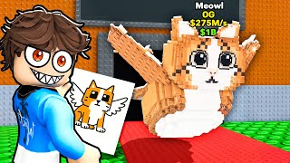
6.75x- 3.44xRoblox DRAW OR GET EATEN.. (IMPOSSIBLE)MoreNizarisaqt
- 2.47x
- 1.92xI Let Roblox Players DRAW ME... (bad idea)MoreNizarisaqt
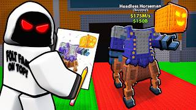
0.42x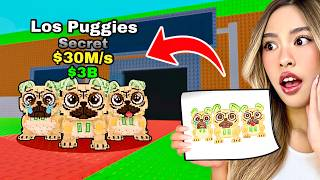
0.35x
All 17 uploads, the rule that picked them, and the channels
Every upload in the crawled catalogues whose title matches this shape, misses included; the projection is the median of all of them. Nico Polo's is the only real-life upload; the other fourteen, and Nizar's two, are in-game.
| Upload | Channel | Views | Lift | Basis | |
|---|---|---|---|---|---|
| Everything I Draw Comes To LIFE in Steal a Brainrot! | CaylusBlox | 8.1M | 6.75x | lifetime views ÷ the channel's median upload aged 28 to 360 days (1.2M) | |
| Roblox DRAW OR GET EATEN.. (IMPOSSIBLE) (his own) | MoreNizarisaqt | 259K | 3.44x | repo outlier score: first-28-day views against contemporaries | |
| Steal a Brainrot but EVERYTHING I Draw Becomes REAL! | Aphmau Shuki | 1M | 2.47x | lifetime views ÷ the channel's median upload aged 28 to 360 days (405K) | |
| I Let Roblox Players DRAW ME... (bad idea) (his own) | MoreNizarisaqt | 371K | 1.92x | repo outlier score: first-28-day views against contemporaries | |
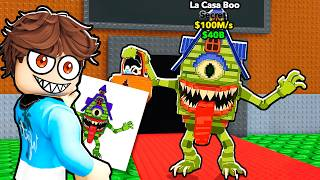 | Everything I Draw COMES TO LIFE in Steal a Brainrot.. | CaylusBlox | 1.9M | 1.58x | lifetime views ÷ the channel's median upload aged 28 to 360 days (1.2M) |
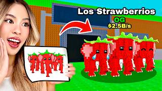 | Whatever I Draw COMES TO LIFE in Steal A Brainrot! | Kat | 1.2M | 1.58x | lifetime views ÷ the channel's median upload aged 28 to 360 days (759K) |
| Whatever I Draw Comes to LIFE in Steal a Brainrot Roblox! | Senpai | 539K | 1.36x | lifetime views ÷ the channel's median upload aged 28 to 360 days (397K) | |
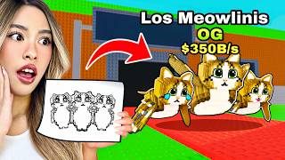 | Everything I Draw Comes To LIFE in Steal A Brainrot! | Kat | 1M | 1.32x | lifetime views ÷ the channel's median upload aged 28 to 360 days (759K) |
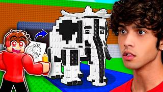 | Whatever I Draw COMES TO LIFE in Steal a Brainrot! | CashBlox | 1.3M | 1.18x | lifetime views ÷ the channel's median upload aged 28 to 360 days (1.1M) |
| Whatever I Draw Comes to Life in Steal a Brainrot.. | Techy | 521K | 1.08x | lifetime views ÷ the channel's median upload aged 28 to 360 days (482K) | |
| Whatever I Draw Comes to LIFE in Steal a Brainrot.. | NicoBlox | 155K | 0.87x | lifetime views ÷ the channel's median upload aged 28 to 360 days (178K) | |
| Whatever You Draw, I’ll Buy It! | Nico Polo | 2M | 0.87x | lifetime views ÷ channel median (2.3M) | |
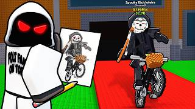 | Everything I Draw Comes To LIFE in Steal A Brainrot! | Foltyn Family | 2M | 0.77x | lifetime views ÷ the channel's median upload aged 28 to 360 days (2.6M) |
| Whatever I Draw COMES TO LIFE In ANIMAL HOSPITAL.. | Kat | 489K | 0.64x | lifetime views ÷ the channel's median upload aged 28 to 360 days (759K) | |
| Whatever I DRAW Comes To LIFE In Roblox.. | Foltyn Family | 1.1M | 0.42x | lifetime views ÷ the channel's median upload aged 28 to 360 days (2.6M) | |
| Everything I DRAW Comes To LIFE In Steal A Brainrot.. | Foltyn Family | 1.1M | 0.42x | lifetime views ÷ the channel's median upload aged 28 to 360 days (2.6M) | |
| Whatever I Draw COMES TO LIFE in Steal A Brainrot! | Kat | 268K | 0.35x | lifetime views ÷ the channel's median upload aged 28 to 360 days (759K) |
CaylusBlox11.1M subscribers378 uploads aged 28 to 360 days · mean 1.8M · median 1.2M (lifetime)MoreNizarisaqt460K subscribers438 uploads aged 28 to 360 days · mean 150K · median 122K (first 28 days) Aphmau Shuki4.16M subscribers197 uploads aged 28 to 360 days · mean 558K · median 405K (lifetime)Kat12.2M subscribers155 uploads aged 28 to 360 days · mean 1M · median 759K (lifetime)
Aphmau Shuki4.16M subscribers197 uploads aged 28 to 360 days · mean 558K · median 405K (lifetime)Kat12.2M subscribers155 uploads aged 28 to 360 days · mean 1M · median 759K (lifetime) Senpai1.85M subscribers341 uploads aged 28 to 360 days · mean 465K · median 397K (lifetime)CashBlox5.15M subscribers304 uploads aged 28 to 360 days · mean 1.5M · median 1.1M (lifetime)Techy5.15M subscribers563 uploads aged 28 to 360 days · mean 552K · median 482K (lifetime)NicoBlox4.12M subscribers281 uploads aged 28 to 360 days · mean 379K · median 178K (lifetime)Nico Polo1.37M subscribers13 uploads aged 28 to 360 days · mean 2.4M · median 2M (lifetime)Foltyn Family13.3M subscribers296 uploads aged 28 to 360 days · mean 3.2M · median 2.6M (lifetime)
Senpai1.85M subscribers341 uploads aged 28 to 360 days · mean 465K · median 397K (lifetime)CashBlox5.15M subscribers304 uploads aged 28 to 360 days · mean 1.5M · median 1.1M (lifetime)Techy5.15M subscribers563 uploads aged 28 to 360 days · mean 552K · median 482K (lifetime)NicoBlox4.12M subscribers281 uploads aged 28 to 360 days · mean 379K · median 178K (lifetime)Nico Polo1.37M subscribers13 uploads aged 28 to 360 days · mean 2.4M · median 2M (lifetime)Foltyn Family13.3M subscribers296 uploads aged 28 to 360 days · mean 3.2M · median 2.6M (lifetime)
{kind=link}
Why this idea
'Everything I draw comes to life' is on eight channels in the list as an in-game video, led by CaylusBlox at 6.75x.
The projection is the format's: 265K × 1.18, the median of the 17 uploads in Everything I draw becomes real. The evidence is for the shape, so all five ideas in a format share it.
Thumbnail concept. Before and after. Text: DRAW = REAL. Left: a crayon sketch of a lopsided chair. Right: Niz sitting on the real, equally lopsided chair.

{kind=link}
Why this idea
Nico Polo's 'Whatever You Draw, I'll Buy It!', the one real-life version in the data, read 0.87x.
The projection is the format's: 265K × 1.18, the median of the 17 uploads in Everything I draw becomes real. The evidence is for the shape, so all five ideas in a format share it.
Thumbnail concept. Before and after. Text: I DREW THIS. Left: a drawing of a blue burger. Right: Niz holding a real blue burger, grimacing.

{kind=link}
Why this idea
Twelve of the fourteen in-game versions are Steal a Brainrot videos; this takes the brainrot out of the game.
The projection is the format's: 265K × 1.18, the median of the 17 uploads in Everything I draw becomes real. The evidence is for the shape, so all five ideas in a format share it.
Thumbnail concept. Before and after. Text: NEW BRAINROT. Left: a pencil sketch of a strange creature. Right: the life-size sculpture beside Niz, both pulling the same face.

{kind=link}
Why this idea
MoreNizarisaqt's 'DRAW OR GET EATEN' read 3.44x; drawing is already one of his audience's formats.
The projection is the format's: 265K × 1.18, the median of the 17 uploads in Everything I draw becomes real. The evidence is for the shape, so all five ideas in a format share it.
Thumbnail concept. Before and after. Text: MY GODLY. Left: a sketch of a knife. Right: Niz holding the finished foam knife, glowing.

{kind=link}
Why this idea
The costliest idea in the least-proven format: make it only after a cheaper drawing video has read above the channel's median.
The projection is the format's: 265K × 1.18, the median of the 17 uploads in Everything I draw becomes real. The evidence is for the shape, so all five ideas in a format share it.
Thumbnail concept. Before and after. Text: BUILT IT. Left: a marker drawing of a gaming room. Right: the finished room, Niz spinning in the chair.
Background
How the ideas were built
What Cash and Nico did at the start
Cash Marco was created on 2023-10-21 as Cash's real-life channel, a year after the Cash Minecraft channel. Nico Polo followed in October 2024, launched around Nico's face reveal on the main channel. The first five uploads on both contain the same three videos: a day in the life (upload one on both), meeting the other half of the duo in real life (upload two on Cash Marco, upload three on Nico Polo), and a look at where they live (Cash's apartment tour at three; Nico's setup and mansion at four and five). The day-in-the-life video read 1.36x on Cash Marco and 0.52x on Nico Polo; the meeting was the biggest video of each launch.
What happened next separates them. Cash Marco went into a hundred and eleven uploads of solo reaction content (Skibidi Toilet watch-alongs, Dhar Mann-style story reactions, tier lists, 100% playthroughs) at a median of 1.1M views, then stopped, came back with "I'M BACK..." and ran twenty-three videos with Nico, Shady, Mia and Zoey in the room at a median of 4.1M. The channel has not uploaded since 2025-06-14. Nico Polo never left the cast: forty-nine uploads whose titles name Cash, Zoey, Foltyn, Lana, his crush or his family in most of them, a six-month pause from August 2025, and a weekly schedule since May 2026 at 2M a video.
| # | Cash Marco, first twelve uploads (from late October 2023) | Views | vs median | Length |
|---|---|---|---|---|
| 1 | A Day in the Life of Cash | 1.9M | 1.36x | 8:12 |
| 2 | I Met Nico in Real Life | 5.3M | 3.79x | 10:16 |
| 3 | Cash’s Apartment Tour | 2.6M | 1.86x | 10:39 |
| 4 | Reading Hate Comments | 1.1M | 0.79x | 14:23 |
| 5 | Eating the World’s SPICIEST vs SOUREST Food - Challenge | 1.8M | 1.29x | 12:41 |
| 6 | You Laugh, You Lose | 2.3M | 1.64x | 10:44 |
| 7 | DON’T Take This Survey Home Alone... | 2M | 1.43x | 11:32 |
| 8 | i’m thinking of quitting | 809K | 0.58x | 13:25 |
| 9 | I Bought BANNED Amazon Products! | 3.5M | 2.50x | 17:16 |
| 10 | TRY NOT TO LAUGH: WATER EDITION | 1.7M | 1.21x | 11:41 |
| 11 | EATING ONLY GAS STATION FOOD FOR 24 HOURS! | 3.5M | 2.50x | 17:29 |
| 12 | 100% Completing ESCAPING THE PRISON (ALL ENDINGS) | 1.1M | 0.79x | 9:28 |
| # | Nico Polo, first twelve uploads (from October 2024) | Views | vs median | Length |
|---|---|---|---|---|
| 1 | Day In The Life of Nico | 1.2M | 0.52x | 8:49 |
| 2 | How I Almost Died on a Yacht... | 938K | 0.41x | 10:04 |
| 3 | I Met Cash In Real Life | 5.1M | 2.22x | 20:08 |
| 4 | Nico’s $13,000 Gaming Setup Transformation | 1M | 0.43x | 8:20 |
| 5 | I Got a Mansion for My Birthday | 1.4M | 0.61x | 15:32 |
| 6 | I Met Zoey In Real Life | 5M | 2.17x | 18:12 |
| 7 | I Stayed OVERNIGHT with Zoey in a Hotel | 5.7M | 2.48x | 18:26 |
| 8 | I Gave Zoey My Credit Card For 24 Hours | 1.7M | 0.74x | 16:24 |
| 9 | Eating Only FAST FOOD for 24 Hours | 2.8M | 1.22x | 13:37 |
| 10 | My Crush Does My Makeup | 1.8M | 0.78x | 20:22 |
| 11 | Saying YES To Zoey For 24 Hours?! | 2M | 0.87x | 18:01 |
| 12 | We Got Lost In Vegas… | 1.5M | 0.65x | 9:07 |
Lifetime views. The eras are read off the titles: solo reaction videos (Skibidi watch-alongs, Dhar Mann-style story reactions, tier lists, 100% playthroughs) run from upload 12 to 122; "I'M BACK..." at 123 opens the crew era.
Lifetime views. Uploads 37 onward are the weekly run since the six-month pause (2025-08-09 to 2026-02-18, from the channel feed).
Cash Marco launched under twelve minutes and lengthened; Nico Polo launched at sixteen and its weekly return runs twenty-three. MoreNizarisaqt's own retention finding (uploads over about twenty minutes hold less) argues for the shorter end at launch.
Subscriber counts read from the public channel pages on 2026-09-09. Two channels is a coincidence until a third agrees; it is on the page because it is the only conversion figure the niche offers.
The template in one line. Open with the face, the partner and the room; keep the cast in every video; spend the "I Met" shape on the biggest name who will say yes, about once a month; run the cheap constraint and party formats in between; launch at ten to fifteen minutes and lengthen only when the numbers say so.
What each real-life shape is worth on the two IRL channels
Every long-form upload on both channels classified by its title, with lift measured against its own channel's lifetime median. Two channels is thin, so the table says on how many channels each shape has a reading and how many of its uploads sat above median. Shapes with one channel behind them carry that channel's number, and the single-winner law applies to every one of them.
Highlighted: at or above 1.3x on two or more channels, the convergence law's bar. Single-channel shapes carry Cash Marco's or Nico Polo's number, not the niche's.
Lifetime views divided by the channel's lifetime median. The guest's own audience sets the ceiling: Foltyn (13.3M subscribers) at the top, a fan group at the bottom.
| Shape | Median lift | Range | Uploads | Above median | Channels |
|---|---|---|---|---|---|
| I Met ___ In Real Life | 2.74x | 0.70x to 4.79x | 8 | 7 of 8 | Cash Marco, Nico Polo |
| Living in my car for 24 hours | 2.70x | 1.65x to 3.43x | 3 | 3 of 3 | Cash Marco, Nico Polo |
| Sleepover / overnight | 2.48x | 2.48x to 4.78x | 3 | 3 of 3 | Nico Polo |
| Friend-group party game | 2.14x | 0.96x to 7.86x | 15 | 14 of 15 | Cash Marco, Nico Polo |
| Product tests (Amazon, YouTuber products) | 2.07x | 1.57x to 2.71x | 5 | 5 of 5 | Cash Marco |
| Reading comments / reacting to me | 1.56x | 0.62x to 2.43x | 8 | 5 of 8 | Cash Marco, MoreNizarisaqt, Nizarisaqt |
| Being controlled / saying yes for 24h | 1.50x | 0.74x to 2.09x | 5 | 3 of 5 | Nico Polo, Nizarisaqt |
| Eating constraint (24h, one colour, gas station) | 1.43x | 1.00x to 2.50x | 7 | 7 of 7 | Cash Marco, Nico Polo |
| Surprising ___ with ___ | 1.17x | 0.78x to 1.83x | 7 | 5 of 7 | Cash Marco, Nico Polo |
| Crush premise (Nico Polo's spine) | 1.15x | 0.61x to 2.48x | 10 | 6 of 10 | Nico Polo |
| Horror / home alone | 0.91x | 0.21x to 3.90x | 6 | 3 of 6 | Cash Marco, MoreNizarisaqt, Nizarisaqt, Rex (nizxrex) |
| Day in the life | 0.87x | 0.87x to 1.36x | 3 | 1 of 3 | Cash Marco, Nico Polo |
| Money / price extremes | 0.87x | 0.23x to 3.00x | 5 | 2 of 5 | Cash Marco, Nico Polo |
| Home / setup tour | 0.67x | 0.43x to 1.86x | 4 | 1 of 4 | Cash Marco, Nico Polo |
| Personal story / announcement | 0.66x | 0.39x to 1.74x | 7 | 3 of 7 | Cash Marco, Nico Polo |
| Travel | 0.65x | 0.29x to 3.04x | 8 | 3 of 8 | Cash Marco, Nico Polo |
| 100% completing a game (Cash's playthroughs) | 0.23x | 0.16x to 1.21x | 11 | 1 of 11 | Cash Marco |
Three things the library says that the ideas below are built on. The cast shapes are the biggest and the least portable: the party games read 2.14x across 15 uploads, but 7.86x with Cash's cast and 1.09x with Nico's two, so the number belongs to the people as much as the shape. The constraint shapes are the most portable: living in a car reads 2.70x on three uploads across both channels, and the eating constraints are above median on both. And repeats decay: the second home-alone horror video read 0.21x, the second first-class flight 0.65x, the second reacting-to-TikToks 1.21x against a 2.36x first run.
What Nizar already has
He shows his face on every thumbnail already, so there is no reveal to stage. His little brother is on camera and reads above median when Nizar is upgrading him or being judged by him (1.90x, 1.68x, 1.37x) and below it when Nizar trolls him in-game (0.58x, 0.46x). Rex, his duo partner, runs his own 97K channel. His audience has voted for real-life ingredients inside the Roblox videos: the sour-candy penalty is his biggest outlier of 2026 at 5.50x, Guess The Country a 3.48x breakout on MoreNizarisaqt, exposing his own secrets read 2.94x, sneaking into other YouTubers' videos 2.67x, and reacting to their TikToks about him 2.27x. He is Moroccan and the identity angle has three readings above median.
First-28-day views against the uploads nearest in time, from the repo's channel pages. Food penalties, identity, his brother and his audience are the ingredients that already read above median; trolling the brother in-game and the Discord video are the ones that did not.
The repo's measured constraints on MoreNizarisaqt carry over. Thirty-one percent of the audience leaves in the first five percent of a video, which is the channel's largest single loss, so the IRL videos open on what the thumbnail showed. The share still watching at halfway falls with runtime (r = -0.75 over 40 uploads), which is the second reason to launch at ten to fifteen minutes. Click-through sits at 8.9% and 62% of classified viewers return, which is the audience the IRL channel is asking to follow it. The Nizarisaqt IRL channel was created on 2024-02-17, has 76K subscribers, features the main channel's "I Bought My DREAM HOUSE..." upload (1.30x, 315K) as its trailer, and has never uploaded.
The knowledge base's warning that a video which misrepresents the channel delivers subscribers who want something you do not make is the reason the IRL content belongs on the separate channel that already exists, and the reason the bridge videos in the second family are the only ones that should touch the main channel.
The supplied niche list
The twenty-two handles from the supplied list, read from their public channel pages. The median is over each channel's long-form uploads aged 28 to 360 days at the crawl, the same baseline every niche lift on this page divides by.
| Handle (from the list supplied) | Subscribers | Uploads, 28 to 360 days | Median views | What the catalogue says about real-life content |
|---|---|---|---|---|
| @aphmaushuki | 4.16M | 197 | 405K | Aphmau's Roblox channel. No real-life uploads in the latest thirty. |
| @briannaplayz | 6.44M | 157 | 362K | Gaming channel; her separate "Brianna" channel is the vlog side. Brianna and Preston are the oldest gaming-to-real-life split on the list. |
| @carrydepieshorts5374 | 832K | 332 | 682K | Road-trip games read above median (the Dusty Trip and RV-trip uploads at 1.31x and 1.36x). No real-life uploads. |
| @cashblox | 5.15M | 304 | 1.1M | Cash's Roblox channel. His real-life channel is Cash Marco: 1.7M subscribers, 145 uploads, dormant since 2025-06-14. |
| @caylus | ? | 0 | not captured | Handle returned 404 on 2026-09-09; his main channel is the real-life and reaction side, CaylusBlox the Roblox side. |
| @caylusblox | 11.1M | 378 | 1.2M | Caylus's Roblox channel. Animal Hospital secrets and a Foltyn collab are the biggest recent uploads. |
| @flamingo | 14.6M | 151 | 1.9M | No real-life uploads in the latest thirty; horror-lore content leads. |
| @foltynfamily | 13.3M | 296 | 2.6M | Roblox with the family as cast. The most-used guest on the list: 7.5M views on Nico Polo, top-three uploads on CaylusBlox and Kat. |
| @kat | 12.2M | 155 | 759K | Runs the Roblox-versus-real-life mukbang hybrid on the Roblox channel itself: four uploads, from 4.22x to 0.43x. |
| @lanaslifeee | 9.99M | 222 | 870K | Started with a real-life video in 2020 and runs the Roblox-versus-real-life ASMR hybrid (1.06x; a second was too new to score at the crawl). Never split the channels. |
| @mayrushart | 3.25M | 57 | 393K | +1 Speed and start-over grinds; no real-life uploads. |
| @MoreNizarisaqt | ? | 0 | not captured | Nizar's second channel. Studio data in the repo: 8.9% click-through, 62% returning viewers, median 117K. |
| @nicoblox | 4.12M | 281 | 178K | Nico's Roblox channel. His real-life channel is Nico Polo: 1.37M subscribers, 49 uploads, weekly since May 2026. |
| @nizarisacutie | ? | 0 | not captured | Nizar's main channel. Public data only in the repo: median 265K, 18 breakouts in 134 recent long-form uploads. |
| @nizxrex | 96.9K | 83 | 112K | Rex, Nizar's duo partner. 3AM and Locust videos are his biggest; a natural first "I Met" guest. |
| @otteronRoblox | 749K | 337 | 205K | No real-life uploads; hide-and-seek and +1 shapes. |
| @projectsupremeee | 482K | 350 | 3K | Small recent numbers; no real-life uploads. |
| @reallyotter | 121K | 211 | 92K | Otter's second Roblox channel, not a real-life channel. |
| @SenpaiUnlimited | 1.85M | 341 | 397K | Game-first; no real-life uploads. |
| @ssundee | 25.4M | 227 | 830K | Daily game-first uploads; no real-life content. |
| @Techy-Plays | 5.15M | 563 | 482K | A Roblox mukbang date is in his top three, which is the same hybrid appetite Kat measured. |
The thumbnail template
The launch and crew thumbnails on Cash Marco and Nico Polo share a template that is nearly the opposite of the Roblox one: no avatar, no yellow text block, no arrows to game objects. The original thumbnail briefs used that template. The generated concepts below also apply the supplied thumbnail guides, varying the framework and expression to suit each idea.
Every channel cited
Subscribers and avatars from the public channel pages (the niche list and the two IRL channels on 2026-09-10, Unspeakable and Stokes Twins from the repo's own channel pages). Views per upload are over uploads aged 28 to 360 days. First-28-day views are on record only for MoreNizarisaqt; every other figure is lifetime views, an upper bound on the first 28 days.
| Channel | Subscribers | Uploads, 28 to 360 days | Mean views | Median | Basis |
|---|---|---|---|---|---|
| Nizarisaqt @Nizarisacutie | 2.62M | 317 | 410K | 334K | lifetime |
| MoreNizarisaqt @MoreNizarisaqt | 460K | 438 | 150K | 122K | first 28 days |
 Nizarisaqt IRL @NizarisaqtIRL Nizarisaqt IRL @NizarisaqtIRL | 76.1K | 0 | n/a | n/a | no uploads yet; channel created 2024-02-17 |
| Cash Marco @cashmarco | 1.7M | 0 | 1.9M | 1.4M | no uploads in the past 360 days (last upload 2025-06-14); lifetime over 145 uploads |
| Nico Polo @nicopolo | 1.37M | 13 | 2.4M | 2M | lifetime |
| Unspeakable @unspeakable | 20M | 43 | 4.8M | 4M | lifetime |
| Stokes Twins @stokestwins | 145M | 21 | 44M | 37.4M | lifetime |
| Kat @kat | 12.2M | 155 | 1M | 759K | lifetime |
| Lana's Life @Lanaslifeee | 9.99M | 222 | 1.1M | 870K | lifetime |
| NicoBlox @nicoblox | 4.12M | 281 | 379K | 178K | lifetime |
| CaylusBlox @caylusblox | 11.1M | 378 | 1.8M | 1.2M | lifetime |
| Techy @Techy-Plays | 5.15M | 563 | 552K | 482K | lifetime |
| MayRushArt @mayrushart | 3.25M | 57 | 618K | 393K | lifetime |
| Carrydepie @carrydepieshorts5374 | 832K | 332 | 781K | 682K | lifetime |
| Rex (nizxrex) @nizxrex | 96.9K | 83 | 141K | 112K | lifetime |
| Foltyn Family @foltynfamily | 13.3M | 296 | 3.2M | 2.6M | lifetime |
| CashBlox @cashblox | 5.15M | 304 | 1.5M | 1.1M | lifetime |
 OTTER ON ROBLOX @otteronRoblox OTTER ON ROBLOX @otteronRoblox | 749K | 337 | 261K | 205K | lifetime |
 Flamingo @flamingo Flamingo @flamingo | 14.6M | 151 | 2.1M | 1.9M | lifetime |
 SSundee @ssundee SSundee @ssundee | 25.4M | 227 | 859K | 830K | lifetime |
 Aphmau @aphmau Aphmau @aphmau | 25.3M | 284 | 1.6M | 1.3M | lifetime |
| Aphmau Shuki @aphmaushuki | 4.16M | 197 | 558K | 405K | lifetime |
| BriannaPlayz @briannaplayz | 6.44M | 157 | 786K | 362K | lifetime |
 Project Supreme @projectsupremeee Project Supreme @projectsupremeee | 482K | 350 | 11K | 3K | lifetime |
| Senpai @SenpaiUnlimited | 1.85M | 341 | 465K | 397K | lifetime |
 OTTER ROBLOX (second channel) @reallyOTTER OTTER ROBLOX (second channel) @reallyOTTER | 121K | 211 | 132K | 92K | lifetime |
Rules applied, and what was withheld
Standing as the intelligence pages record it on 2026-09-24. Laws are applied as rules, warnings as things to avoid, measured and observed findings as evidence. Theories are withheld: this version cites none of them, and the notes on the first hundred that leaned on one were rewritten without it.
Withheld (theory): The swap test; Cheap formats compound; Three to five escalating rounds; Memorable through contrast; Money is never the motive; A serialised world; Countdowns hold.
What this page cannot say
- Lifts on Cash Marco and Nico Polo are lifetime views divided by a lifetime median. The knowledge base's law says the fair comparison is each video's first 28 days, which no public source gives; older uploads are flattered and the newest undercounted.
- Niche-channel lifts divide lifetime views by the channel's median upload aged 28 to 360 days, the figure the channel chips show. Until 2026-09-24 the first hundred's cards divided by the median of each channel's latest thirty uploads, which counts uploads too new to have their views. Of the 22 evidence rows that touched, nine were themselves under 28 days old and are now marked too new to score; the other 13 read a median 1.77x lower on the new baseline. Twelve ideas' projections moved.
- Exact publish dates for the launch-era uploads could not be read: YouTube rate-limited the watch pages on the day of the crawl. Eras are read from the title sequence and the dated entries in each channel feed.
- The one-in-three conversion figure rests on two channels and today's subscriber counts.
- Projections assume the IRL channel's typical upload lands where the main channel's does. Nizarisaqt IRL had 78.3K subscribers and no uploads on 2026-09-24; its first uploads will land below the base until the audience moves.
- No retention, click-through or viewer split exists for any IRL channel in the set. What happens inside these videos is inherited from MoreNizarisaqt's measured curves; the knowledge base's theories were withheld.
- The solo formats' evidence is picked by a title rule, so a video's shape is what its title claims. Where the real-life record is thin, the rule also counts in-game uploads of the same shape; the confidence grade says how many channels have made the real-life version.
- Ideas in a solo format share one projection because the evidence is for the shape, not the episode. The fifty solo thumbnails are composites: Nizar is reused from the 2026-09-11 renders and the scenes are generated. None has been tested with viewers.
How the figures were made
Catalogues were read from the public YouTube pages of Cash Marco (UCCbsKLn-kAJR6b_dXtfJj2Q), Nico Polo (UCgmU4jG1sSkpqfZ7h9_gDWA), the Nizarisaqt IRL channel (UCyaqVl5F2E8G6MY-oFyrlEA) and the twenty-two handles on the supplied list on 2026-09-09 and 2026-09-10: titles, lifetime views, runtimes and relative upload age, plus the dated channel feeds. Nizarisaqt's, MoreNizarisaqt's, Unspeakable's and Stokes Twins' figures are the repo's own outlier scores from its channel pages. Lift is an upload's views divided by its own channel's typical upload; an idea's projection is the main channel's median (265K) times the median lift of its evidence, with the main channel's quartile spread (0.64x to 1.40x) as the range.
Version 2 (2026-09-24) simplified the page to one list of formats, added the ten solo formats and their fifty ideas, moved the evidence behind each card's "Why this idea", put the niche lifts on one baseline, and re-read the intelligence pages: laws and warnings are applied, theories withheld. Each solo format's evidence is every upload in the crawled pool whose title matches its shape, checked against the thumbnails to drop in-game versions; the rule and the full list sit under each format. The evidence thumbnails are the uploads' own, stored beside this page. The 100 generated concept thumbnails were added on 2026-09-11 using the supplied thumbnail guides and the public intelligence snapshot; the fifty solo thumbnails were composited on 2026-09-24 and are listed in thumbnail-manifest-solo.json, kept apart from the hundred-image manifest the deploy check reads. The ideas and prose were written by Claude on a human brief; the figures were computed, none typed. All 150 ideas are in ideas.json.